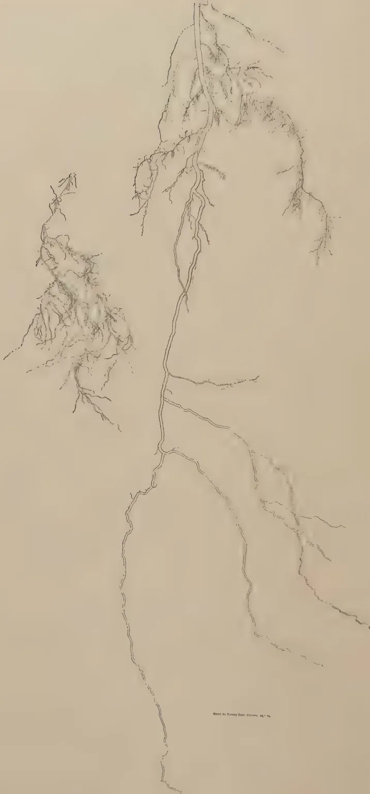
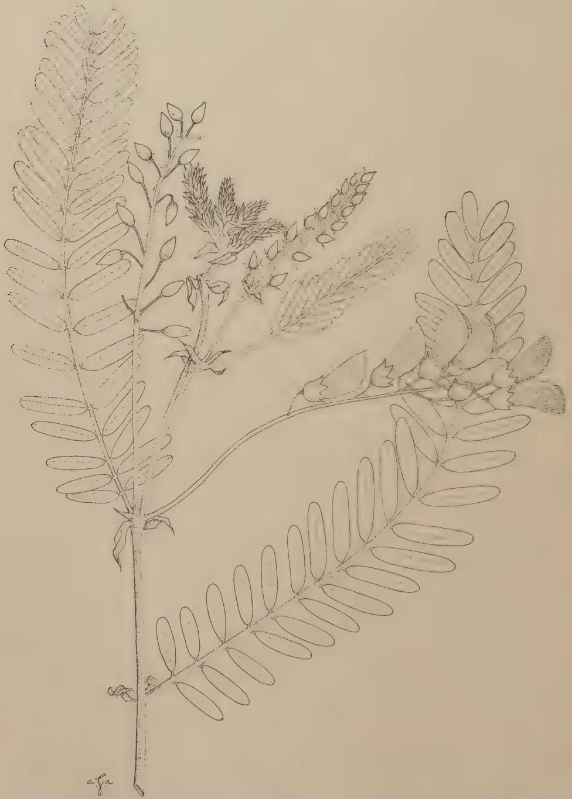
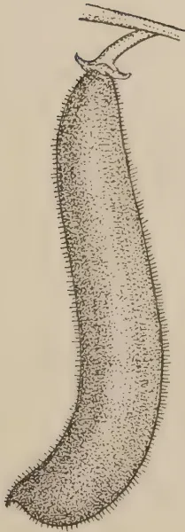
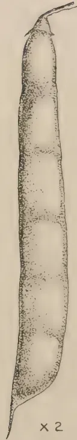

The
February, 1939
MANY of the improved facilities for contact between agricultural research workers throughout the Empire which now exist are traceable to the Imperial Agricultural Research Conference held in London in 1927 and there is now no occasion for the colonial agricultural officer to pursue his investigations in comparative isolation as he was obliged to do not many years ago. Among the many useful developments which have resulted from the recommendations adopted at that conference, not the least important has been the opportunity for personal discussion provided to workers on the same subjects at periodical conferences held in London. To the various specialist conferences has now been added a conference of Colonial Directors of Agriculture. The first convocation of this nature was held in 1931 and proved so successful that it was followed by a second one in 1938. The report of the second conference has recently appeared and contains much information bearing upon agricultural problems with which Ceylon is concerned. Space does not allow more than a very brief reference here to the various items considered.
The section of the report which deals with soil erosion indicates that a sound public opinion is being formed throughout the Empire in favour of soil conservation, the prevention and check of accelerated erosion and the maintenance of fertility. It is pointed out that the chief asset of the colonial peoples is the soil and that economic policy should be planned on soil fertility and productivity, but success is unlikely to be achieved unless close co-operation is established between the Administration, technical departments of Government, local Authorities and the people. The various problems of the subject are
72dealt with in the report. The report emphasizes the importance of mixed farming in maintaining soil fertility and improving the nutritional standards of the people and of the essential part which animal husbandry must play in systems of mixed farming. On the subject of nutrition, the need for close co-operation between the Medical, Agricultural, Veterinary and Education Departments is stressed and emphasis is also given to the need for the greater consumption of meat and other animal products, fruit and green vegetables if a general improvement in nutrition is to be effected. The opinion is expressed that an improvement in nutritional standards will automatically follow an improvement in the economic position of the peoples concerned and, for this reason, the increased production of local supplies of suitable food should be accompanied by the production of commercial cash crops or animal products. Reference is made in the report to the important part which the settlement of suitable people upon the land can play in solving certain social problems, but it is pointed out, no system of land settlement can be expected to succeed unless it is carefully planned. Special attention should be paid to the selection of good agricultural land having access to market centres, transport facilities and a good water supply. Settled areas should receive continual and competent supervision if they are to provide a permanent alleviation of certain social difficulties. The subject of inspection of exported produce, which is of such vital concern to the trade of many Empire countries, is one which has not yet received attention in Ceylon. The report indicates that, in spite of certain difficulties, general progress in the development of training in agriculture has been made throughout the Colonial Empire, one satisfactory result of which is that Departments of Agriculture will, in future, be in a position to meet some of their staff requirements by local recruitment. A feature of the discussion on this subject which has a special application to Ceylon, where an effort is being made to wean young men from the towns to the land, is the emphasis laid on the necessity for making rural life more attractive and the real need for the improvement of living and working conditions in rural areas. Discussion on agricultural propaganda and publicity led to the conclusion that such extension activities as demonstrations and lectures at meetings of village councils, schools, and district shows accompanied, where possible, by organized visits to demonstration stations and selected farms are of great importance and that these services can be augmented by the use of films and, in some dependencies, by broadcast talks.
It is proposed to reproduce the summary and recommendations of the conference in the next issue of this journal.
73A. W. R. JOACHIM, Ph.D., Dip. Agric. (Cantab.),
CHEMIST
AND
S. KANDIAH, Dip. Agric. (Poona),
ASSISTANT IN AGRICULTURAL CHEMISTRY
TOWARDS the end of 1937, in pursuance of a resolution of the Nuwara Eliya District Agricultural Association that the question of the improvement of kitul (Caryota urens) jaggery and treacle be investigated by Government, field and laboratory trials were started to determine (a) the factors that govern the keeping quality of jaggery, (b) the modifications necessary in the present methods of toddy collection and jaggery manufacture to ensure a product of good storage capacity, (c) how jaggery is best packed for local and export purposes. Most of the kitul jaggery on the market was, until recently, packed in dried plantain leaves. While this method proved satisfactory when the product was stored by the fireplace as is commonly done in Ceylon, it was unsuitable for storage under normal air conditions. Improvements have recently been effected in packing methods. The jaggery is wrapped in oiled paper and packed in thin cardboard cartons, which in turn are enclosed in cellophane paper. Despite these improved packing methods, which cost the producer about 5 cents per packet of jaggery, serious losses have been incurred by producers because of the poor keeping quality of the product under storage conditions in retail stores. The jaggery after a period of about a fortnight begins to deliquesce. Hence the need for these investigations.
Before detailing the nature of the investigations undertaken and the results obtained, it would be advisable to describe briefly the present methods of kitul jaggery manufacture in the Central Province. The sweet toddy is collected either in clean pots, to which the leaf of Cymnosma pedunculata
74(S. ankenda) or the bark of Vateria acuminata (S. hal) is added with the alleged object of preventing fermentation, or in smoked pots or in some cases in pots smeared with a light coating of lime. Frequently only toddy collected in the early morning is used for jaggery manufacture, the evening toddy being mainly used for preparing treacle. The toddy is strained into open clay or copper pots and boiled over a slow wood fire till the volume is reduced to about half. The juice is continually stirred with a wooden spoon and the froth periodically removed. In some places the syrup is allowed to cool, strained again into a smaller open pot and the boiling resumed with continuous stirring till the treacle begins to grain over the spoon. Generally, however, boiling is not interrupted, and is continuous till graining occurs. The contents are then allowed to cool for a few minutes, stirred well, and poured into moulds to set. Coconut shells are mostly used, but special wooden moulds 4 in. by in. by 1 in. are employed if the product is for sale in retail stores. A gallon of toddy gives, on the average, lb. of jaggery. The jaggery, when packed in cartons, is sold at 40 cents, otherwise at 15 to 20 cents per lb.
The plan of the investigation was as follows. As it was obvious from a preliminary study of the subject, that the quality of the toddy was of fundamental importance in the preparation of jaggery of good keeping quality, different samples—morning and evening toddy, toddy collected in clean pots, with and without ankenda leaf and in limed pots—were analysed after ascertaining by preliminary tests the most suitable preservative for unlimed toddy. Mercuric chloride and formalin were the preservatives tested, the quantities of each used being, respectively, 0.15 gm. and 1.5 c.c. per 300 c.c. of juice. In view of the difficulties encountered in the analysis of toddy treated with formalin, mercuric chloride was eventually adopted as the standard preservative. Through its use, comparison of the relative rates of fermentation of differently treated samples of toddy was made possible. The next stage of the investigation was the preparation of jaggery from quantities of toddy subjected to the varying treatments. The jaggery was prepared by expert jaggery makers at Nugawela Experiment Station and at the village of Dorenagama. The jaggery samples were then examined analytically, and their storage properties studied subsequently. Storage tests were carried out with jaggery (a) under exposed conditions, (b) packed in cartons, (c) packed in air-tight and vacuumized tins and (d) in ordinary air-tight and vacuumized bottles. Tests (c) and (d) were designed with an export trade in view. Finally, the
75effect of high pressures on jaggery suitably treated, was investigated in relation to the flavour, composition and keeping quality of the residual product. Simultaneously with these investigations, the changes occurring when well-limed sweet kitul toddy was retained for varying periods of time were studied at the request of the Excise Commissioner.
Methods for preserving kitul treacle were also investigated. The results of these investigations are presented in a series of five tables which will be referred to in the course of this paper. Much of the detailed data has been omitted, only such being included as afford confirmation of statements made. The same analytical methods as those described in a previous paper were followed (1).
Table I below shows the analyses of toddy samples subjected to varying treatments. Where preservatives were used, they were added to the toddy immediately the pots were brought down from the trees. The analyses were made at a minimum of four hours from the time of removal from the trees :—
TABLE I
Kitul Toddy Analyses
| Brix. | Reducing Sugars gm. per 100 c.c. |
Sucrose gm. per 100 c.c. |
Remarks. | |
|---|---|---|---|---|
| 1. Morning sample, preserved with formalin .. .. | 13.2 | 0.22 | 12.61 | — |
| 2. Do. mercuric chloride 13.2 .. | 0.19 | 12.83 | .. | — |
| 3. Evening sample, preserved with formalin .. .. | 13.4 | 1.41 | 10.87 | .. |
| 4. Do. mercuric chloride 13.4 .. | 1.14 | 11.50 | .. | — |
| 5. Untreated .. .. | 13.0 | 0.51 | 12.58 | .. Opaque and good deal of sediment |
| 6. No. 5, preserved with mercuric chloride .. .. | 13.0 | 0.36 | 12.99 | .. Fairly clear and much less sediment |
| 7. Treated with ankenda leaf .. | 13.2 | 0.91 | 11.76 | .. Fairly clear and practically no sediment |
| 8. No. 7, preserved with mercuric chloride .. .. | 13.2 | 0.67 | 11.62 | .. Clear and practically no sediment |
| 9. Untreated .. .. | 12.2 | 3.10 | 10.35 | .. Jaggery does not set |
| 10. No. 9, preserved with mercuric chloride .. .. | 12.2 | 2.44 | 11.92 | .. do. |
| 11. Treated with ankenda leaf .. | 13.2 | 2.79 | 12.03 | .. do. |
| 12. No. 11, preserved with mercuric chloride .. .. | 13.2 | 1.73 | 12.82 | .. do. |
| 13. Treated with lime .. .. | 14.4 | 2.10 | 13.72 | .. Not sufficiently limed poor quality jaggery |
| 14. Untreated .. .. | 14.2 | 1.02 | 13.85 | .. — |
| 15. Treated with lime .. .. | 13.3 | Nil | 12.9 | .. Adequately limed |
The following observations may be made :—
TABLE II
"Limed" Toddy Analyses
| Date of Analysis | Reducing Sugars gm. per 100 c. c. |
Sucrose gm. per 100 c. c. |
Acidity as Acetic Acid per cent. |
Alcohol per cent. (by weight) |
|---|---|---|---|---|
| 10.5.38 .. | .. Nil | .. 12.9 .. | .. Nil .. | .. Nil .. |
| 16.5.38 .. | .. { A. Traces | .. 7.6 .. | .. 0.33 .. | .. 0.95 .. |
| .. { B. Traces | .. 10.8 .. | .. 0.15 .. | .. 0.16 .. | |
| 23.5.38 .. | .. Traces | .. 0.7 .. | .. 1.11 .. | .. 1.54 .. |
In Table II above are shown the results of analysis of four separate samples obtained from a bulked sample of adequately-limed sweet toddy and retained for periods of 8 hours, 6 days and 13 days, respectively, from the time of removal from the tree. It will be noted that the 8-hour old sample was totally unfermented, the reducing sugar content being nil. The 6-day old samples, which had developed a peculiar gummy froth and a sweetish smell of alcohol tinged with acetic acid, had small percentages of alcohol and acetic acid and lower percentages of sucrose than the original toddy. Sample B was much less fermented than sample A. By the 13th day the sucrose content had fallen to less than 1 per cent. but, while the alcohol content was only about 1.5 per cent., the acetic acid content had risen to well over 1 per cent. In general it may be stated that the effect of adequate liming is to inhibit alcoholic fermentation in toddy for about 5 or 6 days, after which acetic fermentation occurs simultaneously with inhibited alcoholic fermentation. These findings are similar to those of Annett (3) and others in India with date palm toddy.
TABLE III| Nature of Sample. | Analyses of Jaggery | Observations on keeping Quality | |||
|---|---|---|---|---|---|
| Reducing | |||||
| Moisture Per. Cent. |
Sugars Per Cent. |
Sucrose Per Cent. |
Ash Per Cent. |
||
| 1. From morning toddy, untreated | 7.72 | 0.76 | 82.00 | 1.61 | Good for one month in open |
| 2. From evening toddy, untreated | 8.72 | 3.19 | 76.60 | 1.78 | Inferior to 1 |
| 3. From untreated toddy | 7.52 | 8.58 | 67.78 | 1.29 | Running after two days |
| 4. Do. | 5.97 | 14.17 | 65.00 | 1.31 | Very soft after five days |
| 5. Do. + alum | 7.63 | 7.02 | 70.64 | 1.80 | Slightly soft after five days; jaggery light-coloured |
| 6. From limed toddy | 6.64 | 2.24 | 75.02 | 1.27 | Hard for over six weeks; liming deficient; toddy slightly acid in reaction (pH 6.3) |
| 7. Do. + alum | 8.02 | 5.17 | 70.62 | 2.80 | Fairly hard for over a month |
| 8. Do. | 4.83 | Trace | 87.05 | 1.76 | Samples all kept well for about two and a half months though exposed. Toddy of high degree of alkalinity (pH 9.8) due to thorough liming |
| 9. Do. + citric acid | 7.65 | 1.26 | 83.48 | 1.72 | |
| 10. Do. + tartaric acid | 7.39 | 1.75 | 82.75 | 1.77 | |
| 11. Do. + alum | 7.00 | 0.93 | 83.60 | 2.53 | |
| 12. Do. without decanting | 8.34 | 2.74 | 78.04 | 2.77 | |
Table III furnishes the analytical data of jaggery prepared from toddy subjected to different treatments and relevant observations on the keeping quality of the product.
78The following points call for comment :—
recklessly; (2) the quantities required would vary with different samples of limed toddy; (3) the reaction of the treated toddy has to be tested in every case. Carbon dioxide can also be used as a deliming agent but the difficulty of obtaining a regular and cheap supply of the gas militates against its use by the villager. Experiments carried out by the writers have, however, indicated that the use of deliming agents is not essential for the preparation of jaggery of good keeping quality from limed kitul toddy. If
As. 3-
Vol. XCII., No. 2, February, 1939.—Page 78, line 3, for “higher” read “lower” and for “lower” read “higher.”
| Nature of Sample | Ash Per Cent. |
Lime Per Cent. |
Chlorine Per Cent. |
|---|---|---|---|
| 1. Kitul, untreated .. | 1.60 .. | 0.179 .. | 0.284 .. |
| 2. Kitul, limed .. | 1.61 .. | 0.180 .. | 0.251 .. |
| 3. Kitul, limed + citric acid .. | 1.72 .. | 0.178 .. | — .. |
| 4. Do. + tartaric acid .. | 1.77 .. | 0.246 .. | — .. |
| 5. Do. + alum .. | 2.53 .. | 0.421 .. | — .. |
| 6. Palmyrah .. | 3.79 .. | 1.21 .. | 0.441 .. |
| 7. Coconut .. | 1.16 .. | — .. | 0.261 .. |
An examination of Table IV, in which the lime and chlorine data of samples of kitul jaggery prepared from differently treated toddies are shown, will indicate that jaggery prepared from limed toddy in the manner prescribed contains no higher percentages of lime and chlorine than jaggery from unlimed toddy. The former does, in fact, contain less chlorine than jaggery prepared from untreated toddy.
Table IV also gives the lime and chlorine contents of palmyrah and coconut jaggery. The former has very appreciably higher lime and higher chlorine contents than kitul jaggery prepared by any of the methods referred to in this paper.
It would be relevant to consider here the subject of the boiling and setting temperatures of kitul jaggery. A number of observations made in the course of preparation of several samples of kitul jaggery confirm that the juice begins to boil at a temperature of about 210°F. and that the temperature of the thick syrup just before it “sets” is 240°F.
80A recent paper by Hinchy (6) on a method of refining palmyrah jaggery led to the conducting of experiments to determine whether jaggery which had been subjected to pressure for a certain period would be of superior keeping quality to the original product. The jaggery was pounded and kneaded to an uniform consistency, packed in a drill bag and then pressed in a laboratory hydraulic press at a pressure of about 5 tons per square inch for 15-16 hours. The results of analysis of the original material, of the pressed jaggery and of the runnings are presented in Table V.
TABLE V| Original Jaggery Per Cent. |
Pressed Jaggery Per Cent. |
Runnings Per Cent. |
|
|---|---|---|---|
| Moisture .. | 10.13 | 3.83 | 12.49 |
| Reducing sugars .. | 1.19 | 0.47 | 4.09 |
| Sucrose .. | 81.90 | 91.60 | 29.00 |
| Percentage jaggery after pressing .. | 76.0 | ||
| Percentage runnings .. | 24.0 |
It will be observed that the pressed jaggery, the outturn of which is about 75 per cent. of the original, contains a considerably higher percentage of sucrose, a much lower percentage of moisture and an appreciably lower percentage of reducing sugars than the original material. The runnings, on the other hand, contain a much higher percentage of reducing sugars and a much lower percentage of sucrose.
The percentage of insoluble sugars, e.g., gums, and pentosans, and other organic constituents in the runnings, is very high. The fact that the pressed jaggery has kept in excellent condition for months indicates that these insoluble and non-sugars, together with the reducing sugars, are largely responsible for jaggery becoming deliquescent in storage under normal air conditions. These substances, apparently, are also responsible for the flavour of jaggery, as pressed jaggery, unlike the original product, has no characteristic flavour.
Pressed jaggery will, therefore, be of little commercial value as jaggery, despite its good keeping quality. But it is distinctly superior to ordinary jaggery as a raw material for sugar refining.
In order to study the question of jaggery preservation for export purposes, trials were made with canning and bottling of a good quality product (a) in ordinary air-tight containers and (b) in vacuumized containers. The jaggery was moulded to the shape and size of the tins so that but little space was left in the tin on seaming the lids. Twenty-four tins and eight bottles of
81jaggery were so experimented with. The general conclusion drawn from these trials is that, for export purposes, jaggery is best packed in ordinary sealed tins which should not, however, be vacuumized. Vacuumization, especially with jaggery containing a high proportion of reducing sugars, causes deliquescence by drawing to the surface the moisture from within. Well-prepared jaggery, packed in suitably sized sealed tins, has kept in perfect condition for over months.
For local sale purposes, provided the jaggery has been prepared from limed toddy in the manner detailed already, the present method of packing in cardboard cartons wrapped in cellophane should be sufficient to keep the product in good condition for about two months.
Trials were also conducted to determine how treacle could be preserved in good condition by (a) chemical, and (b) sterilization methods. It was found that the preservative agents, potassium or sodium metabisulphite, are effective only if added to the treacle in fairly large quantities. Their use for this purpose is, therefore, not advised. Treacle is best preserved by pasteurization. The method is as follows :—
The bottle of treacle, with the cork well fitted into and tied to its mouth by twine, is immersed in a vessel of cold water. The water is gradually heated to a temperature of — and retained at that temperature for half-an-hour. The bottle is then removed from the water, wiped dry and allowed to cool. On cooling, the twine is untied and the cork cut flush with the mouth of the bottle which is then waxed and capsuled. The cork should be boiled in water and the bottle thoroughly washed and dried before use.
The investigations started at the end of 1937 to determine the factors that govern the keeping quality of kitul jaggery and the modifications necessary in the present methods of collecting toddy or of jaggery manufacture to ensure a product of good storage capacity, were completed. The following conclusions have been drawn :—
Thanks are due to Mr. U. B. Unamboowe, R.M., Kotmale, Mr. C. R. Karunaratne, Agricultural Officer, Grade II., Mr. D. J. de Soysa, Agricultural Instructor, Katugastota, and the Vidane of Palle Ihegama, for their valuable co-operation in the field investigations and to Mr. D. G. Pandittesekere for assistance rendered in connexion with the canning and bottling trials in the laboratory.

A detailed botanical line drawing of the root system of Tephrosia. The illustration shows a central taproot with a long, slightly curved main axis. Numerous lateral roots branch off at various points along this axis. At the top, there are several smaller, more fibrous rootlets. The drawing is rendered in fine, dark lines on a light background, capturing the intricate structure of the root system.Stock by Murray Dept. Gardens, Ag. 1. No.
FIG. 1—THE ROOT-SYSTEM OF Tephrosia.
83W. R. C. PAUL, M.A., M.Sc., D.I.C., Dip. Agric. (Cantab.),
ACTING PLANT PATHOLOGIST
THE incorporation of green manures in the soils of irrigated paddy fields of the dry zone should be regarded as an essential operation in the cultural practices of the crop, for the purpose of supplying nitrogen and organic matter to the soils. On a number of fields situated under village tanks, paddy cannot often be grown for two successive seasons in the year owing to the insufficient supply of water available for irrigation from these tanks. Many of the fields thus remain uncultivated for one or more seasons. During this period, however, several leguminous plants, the chief of which are Cassia tora Linn. (S. tora, peti-tora T. takarai, vadda-takarai) and Tephrosia purpurea Pers. (S. pila T. kavilai, kolinchi), may be found growing on these fields as weeds. Cassia often forms a thick cover soon after heavy rains, but these plants are not long-lived. They shed their leaves and seed early so that with fresh rains, a dense growth of Cassia seedlings may again appear. Tephrosia is slower growing and does not usually form such an even stand as Cassia, but it is longer-lived and except during periods of severe drought it does not shed its leaves. When the rains are sufficiently heavy and the tanks have filled again, these green manures are turned under the soil with the preparatory tillage operations that are carried out for paddy and this non-deliberate method of green manuring the soil for the paddy crop largely contributes to the better yields obtained in the dry zone than when paddy is grown continuously on the same land.
Although Cassia does not possess root nodules, the incorporation of a large quantity of fresh, succulent green material into the soils leads considerably to an increase in the organic matter of these soils. In the case of legumes like Tephrosia, the root system is very deep and extensive (Fig. 1). The nodules on the roots containing the nitrogen-fixing bacterium are numerous and the type of nodulation is efficient according to Fernando (1).
Although more definite methods of green manuring than that mentioned above are in progress in the dry zone, they are not sufficiently widespread yet and it is necessary, therefore,
84to draw the attention of paddy cultivators to the importance of more efficient methods of green manuring for improving crop yields.
There are, generally, two ways of green manuring paddy soils, viz. :—
The first method is more generally practised but it is not so satisfactory as the second. In extensive paddy tracts, there may be great difficulty in obtaining a sufficient supply of green material from outside. Furthermore, it is only the aboveground portions of the plants which can be utilized and, in the case of leguminous plants, the nitrogen fixed by the bacteria in the root nodules of such plants cannot be supplied to the paddy crop, owing to the difficulty of uprooting the complete plants from outside and turning them into the soil of the paddy field. The first method also entails greater expense in cutting the green material from outside and in transporting it to the paddy field.
In the second method, the green manure is usually grown on the land when there is no paddy crop on it. Where, as is generally the case under major irrigation schemes in the dry zone, two early maturing paddy crops (4 months for maha and 3 months for yala) are taken in succession during the year, the intervals between the harvesting of one crop and the sowing of the next are barely sufficient for raising a green manure. The longer interval between the two crops occurs after the harvest of the yala crop in August and the commencement of tillage operations for the maha crop, towards the end of September or early October, but cultivators are generally reluctant to devote any time to growing a green manure during this period as they are occupied with the threshing operations of their last crop before the advent of the heavy north-east monsoon rains. If, however, a single late-maturing crop is substituted for these two early-maturing crops, and it is annually cultivated, then the growing of a green manure crop in the alternate season in the year can be satisfactorily undertaken. Experimental work is necessary in order to ascertain whether the substitution of a single late-maturing crop alternated with a green manure each year would result in more economic returns than a succession of early-maturing crops grown twice a year on the land.
85With the biennial cropping of paddy, the possibility of growing a green manure in association with paddy should be explored. Nicol (3) has drawn attention to the advantages of an association between a cereal and a legume and quotes several instances in primitive forms of agriculture where the mixed cropping of legumes and non-legumes on arable lands is quite common. No instances have, so far, been recorded of associated growth in paddy fields, where a legume is one of the components providing nitrogen for the non-legume, although conclusive evidence has recently been put forward by Fritsch and De (2) of the rôle of certain algae, particularly the blue-green algae, in the fixation of nitrogen in the soils of paddy fields under water-logged conditions.
There is a possibility that some leguminous plants may be found capable of growing with paddy under conditions of periodic inundation which prevail in the fields of the dry zone and that either the immediate or the subsequent paddy crop may benefit by the association. If the legume is unable to develop during the early stages in the growth of the paddy crop, on account of excessive moisture in the soil but would germinate in the later stages when the water is drained off the fields, it could be left standing when the paddy is reaped so that soon afterwards it may flower and set seed. When preparatory tillage commences for the next crop, this green manure can be turned under and the nodules developed by its roots would decay and the nitrogen fixed by the nodule bacteria would be available to this crop. It is possible, however, that a legume may be found adapted to the conditions in paddy fields during the early stages of the growth of the paddy as, in the case of the latter crop, their roots are not of the true aquatic type but they are able to thrive because the algae in these fields are able to liberate oxygen which is utilized by the roots of the paddy plants. In such cases, the legume may be able to benefit the immediate crop. If, therefore, the seed could be collected without difficulty it could be sown in such proportion to that of the cereal as to prevent its growth interfering with that of the paddy. If, however, the legume seed is shed as the pods dehisce and remains dormant in the soil, germinating either with the paddy or at some later stage, the expenditure of collecting the seed of the legume and sowing it would be saved.
In the case of the legume to be grown during the alternate season, when no paddy is cultivated, a longer-aged species may be selected but it should seed before tillage operations commence for the next paddy crop, as otherwise the cost of obtaining seed from elsewhere and sowing it in the alternate season would have to be met as an additional item. It is, of course, to be realized that a green manure which is turned into the soil
86before flowering has a greater nitrogenous value than when it has been allowed to seed but, where the collection of seed from outside becomes costly, it is preferable to turn in the green manure grown in situ after seed production has taken place. A still further advantage would be secured if the green manure not only shed its seed before the cultural operations for the next paddy crop commenced, but also exhibited delayed germination of the seed, so that it remained dormant while the next paddy crop was on the land, germinating soon after the paddy crop was harvested. This would result in a considerable saving of expenditure both in the collection of the seed and in the resowing of the green manure each year after the paddy crop is harvested.
With these objects in view, observations were carried out with a number of leguminous green manures sown under different conditions. The green manure seed was sown (a) mixed with germinated paddy at the time of sowing the paddy, (b) prior to the ploughing of the field in preparation for sowing paddy, (c) before the harvest of the paddy, and (d) after the harvest of the paddy. Brief notes on the crops which proved to be most promising are given below, but much further work remains to be done in order to select varieties which will give the best results in increasing yields of paddy under different systems of cultivation.
1. Phaseolus lathyroides. This plant grows wild on certain paddy fields in the dry zone, both in the standing crop when the fields have been drained and after the harvest. It is a small, erect, semi-shrubby plant.
This species is capable of growing in association with paddy, the seeds germinating on the third or fourth day after sowing. When, however, water is let into the fields, many of the seedlings which are not on high ground or on soils where the water is not retained on the surface for long will die. The surviving plants will be as tall as the paddy and they set seed about 3-4 months after sowing. Owing to the small size of the pods collection is difficult, but the pods dehisce readily when mature and the shed seeds germinate without any period of dormancy. The pods of this plant are subject to an attack by the common Dadap moth (Anoplocnemis phasiana).
2. Sesbania speciosa. Seed of this species was sent for trial by Mr. H. C. Sampson, Economic Botanist, Kew. He collected it from abandoned paddy fields on the Tana river delta in Kenya, stating that the plants on these fields appeared to develop from self-sown seed. Owing to the presence of a hard seed coat, the seed exhibits delayed germination unless
This image is a scan of a blank page. The paper has a light beige or cream-colored tint. There are a few very small, dark specks scattered across the surface, which appear to be scanning artifacts or dust particles. No text, lines, or other markings are present on the page.
A detailed botanical line drawing of Sesbania speciosa. The illustration features a central vertical stem with a trifoliate leaf at its base. The leaf has three large, ovate leaflets with serrated margins. To the right of the stem, a branch curves upwards, bearing several small, oval-shaped seed pods (legumes) and a cluster of small, tubular flowers. At the top of the branch, there is a dense, elongated raceme of flowers. The drawing is executed in fine lines on a light background, with some stippling used for shading. The initials 'a.f.' are visible at the bottom left of the stem.Block by Survey Dept. Ceylon: 2.2.33.
FIG. 2—Sesbania speciosa.
87lightly pounded with sand. The plant grows to a height of 6–8 feet and has conspicuous yellow flowers borne on terminal spikes, with the stems free from spines (Fig. 2).
When sown mixed with paddy it can germinate like Phaseolus on the third or fourth day, although the percentage germination is poor, and many seedlings die when the fields are flooded. Those that survive grow slowly but when the paddy is harvested they grow more rapidly. Seed which is not pounded is capable of germinating after the paddy crop is harvested but the plants that develop are few in number.
3. Crotalaria juncea L. (sunnhemp). This plant has been grown for many years in the north of Ceylon, chiefly for the extraction of fibre and also as a green manure and fodder crop (4). It does not germinate under water-logged conditions when paddy is growing, but comes up well when sown after the paddy is harvested and the fields are ploughed. The seed rate is very high, about 112 lb. per acre being sown in the northern part of the Island for green manuring purposes, but in an experiment carried out on paddy lands, 60 lb. per acre was found to be the optimum as against 40 and 80 lb. per acre, for the production of green material (6). Sunnhemp takes about months to produce seed and it is necessary to collect and resow the seed each season which is one of the objections to the use of this plant.
4. Tephrosia purpurea Pers. and T. villosa Pers. (S. pila T. kavilai or kolinchi). The first-named species is the most popular green manure in the dry zone and differs from T. villosa, which is rare, by its smooth or slightly pilose linear pods, the latter having stout, densely-hairy pods (Fig. 3). The flowers of T. purpurea are somewhat smaller and have a magenta hue while there are two varieties of T. villosa, one with amparo purple (Ridgeway—Colour Standards) and the other white flowers. Both are low shrubs of perennial habit with wide-spreading branches.
The two species possess hard seed coats and thus exhibit delayed germination but they do not grow in the standing crop of paddy even after lightly pounding the seeds with sand. They appear soon after the paddy crop is harvested when the fields are well drained. Even if a second crop of paddy follows the first, Tephrosia appears after the harvest of the second paddy crop. When sown after the harvest of paddy, Tephrosia germinates in about a week's time but its growth is slow in comparison with Phaseolus and sunnhemp. The plants may flower in two months' time and seed in months. T. villosa is considered to be superior to T. purpurea on account of its greater vegetative growth and more profuse production of pods (5).
88SUMMARYObservations carried out on a few leguminous plants suitable for growing as a green manure in paddy fields of the dry zone indicate that where a quick-growing green manure is required in the alternate season when no paddy is cultivated, sunnhemp is the most suitable, but seed has to be sown and collected again for resowing the following year. Tephrosia purpurea, or preferably T. villosa, is, on the other hand, slower growing, but when once established need not be resown as it is capable of shedding its seed which remains dormant until the next paddy crop is harvested. It is more drought-resistant than sunnhemp. Phaseolus lathyroides is capable of growing in association with paddy and at about the same rate, provided the fields are not kept inundated for too long periods at a time. Sesbania speciosa can also germinate with paddy but it does not develop at the same rate as the paddy plant though, after harvest of the paddy, it grows more rapidly. It does not, however, form an even stand, but the seeds when shed can remain dormant in the soil for several months.
Experimental work is now desired to compare the yields of paddy when a single late-maturing crop is grown in one year followed by a leguminous green manure such as sunnhemp, or Tephrosia villosa, in the alternate season, as against two early maturing crops, in which a leguminous green manure is grown in association with the paddy at each season.
REFERENCES
A detailed botanical illustration of a seed pod (legume) of Tephrosia villosa. The pod is elongated, slightly curved, and densely covered with fine hairs. It is attached to a short stem at the top.x 2

A detailed botanical illustration of a seed pod (legume) of Tephrosia purpurea. The pod is elongated and relatively smooth, with some fine hairs visible. It is attached to a short stem at the top.x 2
aga.
BLOCK BY SURVEY DEPT CEYLQN 2.2.39.
FIG. 3—Tephrosia villosa PERS. (LEFT) AND
Tephrosia purpurea PERS. (RIGHT).
W. C. LESTER-SMITH, B.A., Dip. Rural Econ. (Oxon.),
AGRICULTURAL OFFICER, SOIL CONSERVATION
IN order to appreciate the vital importance of reducing soil erosion to a minimum throughout Ceylon, it is necessary to accept the fact that Ceylon, being essentially an agricultural country, as opposed to an industrial one, is almost entirely dependent on agricultural production for her economic existence. Tea, rubber, coconuts and a few minor agricultural commodities are the primary source of her wealth. The soil on which these commodities are grown is the capital upon which Ceylon is dependent for the purchase of her outside requirements of raw materials and food.
Since Ceylon is not self-supporting, the rice and other food-stuffs imported to feed her population must be paid for from the capital derived from exports, which are almost entirely the produce of the land. Their production can continue only so long as the soil can continue to yield these crop commodities at an economic price; in other words they must be produced and marketed at a cost which will enable them to compete with countries producing the same commodities. Provided the demand remains fairly constant and the price obtainable is reasonably remunerative, their supply is mainly regulated by their cost of production. This cost of production is influenced by a variety of factors, such as the price of labour, transport, &c., but the dominating factor of all, which determines whether production is economic or not, is soil fertility.
Soil fertility is to a large extent a measure of the productivity of a soil or, in other words, it represents the value of the crop that the soil can produce. It is not a measure of the degree of one particular factor relating to a soil, such as the quantity of available plant food, the organic matter content, its texture and moisture content, or the number and type of micro-organisms it contains; rather is it a measure of the level of efficiency in crop production which is the result of the interaction of all these factors as influenced by external or environmental conditions, such as climate and cultivation.
Under natural conditions the degree of fertility attained by soils is extremely variable, and especially is this so in the tropics. Density of natural vegetation is not always a reliable
90guide to the natural fertility of a soil; it can, in certain circumstances, be definitely misleading. Under natural conditions over a long period of years an equilibrium of soil fertility becomes established and, unless interfered with by man, there is no permanent removal of plant foods. For numberless years the existing natural vegetation has drawn its food requirements from the soil, but these are continually being returned to the surface soil by falling leaves, dying plants or parts of plants and other similar plant residues which, after decomposition, again become available for the existing natural plant growth. After a time, therefore, the natural vegetation provides its own food requirements in a cyclic process of growth, death and decay; a state of equilibrium is thus established.
Under certain favourable natural conditions, a slow and definite increase in soil fertility may take place, but if these conditions are interfered with the reverse is the case and the level of fertility will be decreased. As in all such cases, these katabolic changes proceed at a very much more rapid rate than those concerned in the building-up of fertility. Thus, when natural conditions are altered so as to make way for the artificial conditions of crop production, the fertility of a soil is immediately affected.
Agriculture essentially comprises the growing of certain plants in large communities, usually of a single type, the whole or some part of which is eventually removed in the form of a crop or a plant product of vegetable or animal nature. In this way large quantities of plant food are continually being removed from the soil and this loss entirely changes its natural equilibrium and rapidly lowers its fertility. However high the level of this fertility may have been, it is only a question of time before it is exhausted, since the fertility of a soil is maintained only until such time as the reserves it contains are used up and this, under tropical conditions, is not long, being at the most a period of a few years. Unless these reserves of soil fertility are built up and maintained, agricultural production becomes less and less remunerative until a stage is reached when the cost of production exceeds the value of the crop produced, and disaster results. This reduction in soil fertility is a cumulative process, the rate of which is accelerated with the passage of time.
The destruction of the vegetative covering of the soil is an unavoidable accompaniment of any form of change, not only from natural conditions to the artificial conditions of cultivation, but also in changes from one crop to another, whether permanent or short-aged. The removal of the protection, either in the form of the natural vegetation or of the crop itself, at once
91exposes the soil to the tropical sun and to rain. The former has far-reaching effects upon the fertility of the soil. It causes the soil temperature to be raised and as a result the rate of oxidation and decomposition of organic matter is accelerated, with injurious effects upon the micro-organisms which make the soil their home. It also causes soil texture and tilth to be affected, enabling soil erosion caused by drying and wind to take place; fertility is thus immediately reduced.
The action of rain then comes into play, the previous processes contributing largely towards accentuating its effects. Rain water causes losses of soil and of plant food by erosion, and further changes and losses of plant food through leaching, for there are important differences between the physical and the chemical action of water upon soils. Erosion is entirely a physical action, the soil particles being removed in suspension in the water; leaching may involve chemical action, causing the removal of plant food by the water in solution: by both processes the fertility of the soil is still further reduced.
The raising of the level of the fertility of a soil, if economic results are to be obtained from its utilization for agricultural purposes, is a process that must be commenced from the very beginning and carried on throughout all time; otherwise the most profitable level of production will never be attained. This can be done only by the adoption of soil-conserving, intensive agricultural practices; crop production and plant and livestock utilization must go hand in hand if the best results are to be obtained.
Raising the fertility of the soil and maintaining it at a high level is the basis of the production of remunerative, healthy and economic crops and livestock. Soil fertility is entirely dependent upon the following conditions:—
(ix) The absence or reduction to a minimum in the soil of all organisms and substances which are inimical to, or destructive of, plant growth.
Of the above, the first is obviously of primary importance, as unless a fertile surface soil can be conserved and retained in situ few, if any, of the remaining requirements can be permanently attained.
The term "soil erosion" means the loosening and removal of soil from its previous resting place, through any agency, and the first soil to be removed by the forces of erosion is the surface soil in which our crops are rooted and from which they obtain the bulk of their food requirements. Without this top soil certain crops may survive, and may even continue the production of what must usually be a low quality product, for a varying number of years at an uneconomic level. In most cases, however, no soil with any appreciable degree of fertility will remain, since few of our cultivated areas in Ceylon now possess any great depth of surface soil.
In many cases in Ceylon a sub-soil which is more resistant to erosion has already been exposed and various attempts to make it more fertile are in progress. These efforts, however, are unlikely to prove successful unless adequate arrangements are first made to conserve and retain this soil in position. It is possible that almost continuous and imperceptible sheet-erosion may prevent any progress being effected, and may even cause further deterioration, which is reflected either in the health of the plants or in standstill or reduced crops.
Wind and moving water are the two commonest agencies of erosion, others being variations, generally extremes, of temperature, and water in the form of ice or snow. In Ceylon wind and water are the two main causes of soil erosion and of these the latter is the more important.
Every owner and every cultivator of land in Ceylon, if he wishes to raise the fertility of his soil and maintain it at an economic level, should first take action to conserve this soil and protect it from erosion, and especially to safeguard it from the eroding force of surface run-off water. This protection mainly involves attention to the following points :—
ANDREW W. KANNANGARA,
ASSISTANT TO THE AGRICULTURAL OFFICER, PROPAGANDA
IT is said that there is no spot where man can find sustenance that will not support a few swarms of bees. In Ceylon, although some places are more suited than others, bees are found under natural conditions both in the dry zone and in the wet zone from sea level to over 6,000 feet; even in towns bees are successfully reared. It may not always be practicable to select the ideal location for an apiary, but if the best results are desired the ideal should be aimed at as far as possible. It is generally believed that Apis indica flies to a distance of not more than half-a-mile from its hive in search of forage.
As the success or failure of an apiary depends to a very large extent on the presence or absence of natural vegetation, it is advisable to see that at least some of the plants described in The Tropical Agriculturist, Vol. XCI., 1938, pages 161-164, thrive in the locality. The number of colonies should necessarily be in proportion to the availability of bee-pasture. Even where sufficient bee-pasture is found among natural vegetation, it is expedient that the bee-keeper should plant some selected plants, so as to supply the bees with pollen and nectar during lean periods of the year. Bees flourish well in coconut estates and in fruit gardens, with benefit both to the plantation and to themselves.
Hives should be so placed as to get the sun from 8 to 10 in the morning and 4 to 6 in the evening. The morning sun is important as it makes the bees start work early. Excessive shade and intense heat are detrimental to the smooth working of a hive. The hives should face the East, under shady trees or under roofs. The distance between hives should be at least 6 feet. Hives should be placed on ant-proof stands and, if necessary, should be protected from high winds.
95Antigonon leptopus, also known as the Mexican Coral Vine, Bride's Tears or Mountain Rose, can be trained on trellisses at reasonable intervals running from East to West. This is a beautiful flowering creeper than which there is no better nectar plant in Ceylon.
There is a common belief in Ceylon that bees should be subdued by smoke or otherwise before they are examined. With the Indian bee, this is not necessary. Local bees "respond kindly to kind treatment". It is unreasonable to stand in front of a hive to open it. The bees which return from foraging will be disturbed and the interloper may be stung. In opening a hive, jerks should be avoided. Bees feel vibrations carried through solid bodies and they get excited. Sound does not affect them.
During the hotter part of the day, it is likely that the combs and brood will be adversely affected and it is, therefore, not advisable to open the hives at this time. Bees will not brook undue intrusion upon their offspring. On wet cold days, they prefer to remain indoors; and for obvious reasons, they are in bad temper. They are never so contented as during the collection of pollen and nectar on hot sunny days. On such days, they may permit a certain amount of disturbance.
To open a hive, the roof must be gently removed from the rear. Then the super combs can be examined one by one. If the frames are pasted together with propolis, a knife will have to be used to detach them. The frames should be held at the two ends. After the combs have been examined, the whole super can be removed to examine the brood chamber. The frames of the latter should be examined in the same manner.
It is not uncommon to find irregular combs in a hive. These should be carefully removed with as little damage to them as possible, and replaced in correct position. The drone combs are always heavier than worker combs; they should be handled in such a manner as not to detach them from the frames. When a hive is opened, the bees come to the edges of the hive. Care should be taken not to crush such bees, not only because of the loss of bee life, but also because it irritates the others.
Bees in a queenless colony are most likely to sting. If they must be handled, they may be gently smoked. A suitable smoker is described in The Tropical Agriculturist, Vol. XC., 1938, pages 358-360. The principle involved in smoking is that when this is done the bees feel that there is some danger and quite naturally try to protect their valuable store, namely honey. To do so they have to drink it, and they drink so much
96that their abdomens become distended with the result that they find it difficult to move about freely in order to sting. Tobacco smoke, popularly used by our villagers, is too strong and its use should be discouraged.
The fear of being stung is the greatest drawback to progress in bee-keeping. The sting is an instrument for self-protection and it will not be used by bees unless they are in imminent danger because they die immediately after stinging. The sting is barbed with recurved teeth and when thrust into the skin it cannot easily be withdrawn. Generally, each sting has three barbs on the sheath and ten on the lancets. Bees invariably leave behind some portion of the body attached to the sting.
A sting causes a certain amount of irritation and swelling, but this can be reduced to a minimum by gently pushing out the sting with a knife or the finger-nail immediately after being stung. Then the injured portion should be rubbed with some leaves of overpowering odour. This is a precaution against further stings.
There is a poison sac at the end of the sting and the poison is gradually injected into the system by the working of the "muscles" of the sting. Hence the importance of immediate extraction. The sting should never be pulled out for, if this is done, the sac bursts and the poison is released. If the swelling is considerable, a hot foment or a cold wet dressing may be applied. The best remedy is not to trouble about it unless the sting is near the eye, in which case some care has to be taken. It is popularly believed that one becomes immune to stings in the course of time. The writer knows of two men who have kept bees for over 15 years and they do not feel the effects of stings at all.
Bees make a careful survey of the surroundings of their hives and have the power of remembering them so clearly that they make a "beeline" to their hives when they are laden with pollen and nectar. If, while they are foraging, the hive has been moved further than three feet, they will find it difficult to locate it. Most of them will hover round the place where the hive had been when they left it and they will ultimately die of exhaustion. If, therefore, it is necessary to move a hive to another site, it should be moved not more than 3 feet each day, or it should be moved by night. When a hive has to be transported long distances, the entrance should be covered at night by a narrow strip of strawboard. It can then be moved on the following morning. If the distance is considerable, it is essential that the insects should be supplied with a reasonable quantity of sugar in solution.
97THE INDIAN BEEThe question has often been asked why so much of trouble is taken over the small Indian bee when there are the more profitable European and American bees. The answer is that there is no need for foreign bees, because research on Apis indica has shown that this bee is capable of giving returns as profitable as her cousins in Europe or elsewhere. Foreign bees are very susceptible to diseases from which our bees are free. Experiments conducted by Hatch and his colleagues in the Travancore State have amply proved that the mind-set of the Indian bee is now changed. She was at one time known to be migratory in nature and a poor worker, but now there is definite proof that she is capable of storing a surplus of honey.
Indian bees prefer to remain in one place so long as that place is a congenial abode for them and for their stored-up products. A thoughtful bee-keeper should examine his hives once a week, rid them of any pests and make certain that there is plenty of food during the rainy weather. If he expects bees to live under the conditions provided for them, then he must see that all their natural requirements are given them. Otherwise they are liable to vacate man-made hives for a more natural life elsewhere.
The Indian bee is fortunate in that she is not liable to any serious disease, but she has often to contend with enemies. The bee-keeper should assist the bees by removing such objectionable intruders from the hives. Uncared-for bees are often menaced by wax moths, the larvae of which completely riddle the combs which have been so well constructed with so much labour. In spite of the water trough, ants find their way into the hives. They do considerable damage to the larvae and also drink honey. The red-and-black-banded hornets carry to their nests a large number of bees; their nests should be located and burnt by night. Cockroaches, lizards and spiders often make a comfortable home in the hives. They are all unfriendly to bees. The king-crow and other birds need to be watched for and scared away from the hives.
HOW SHOULD THE INDIAN BEE BE MADE PROFITABLEIn his book Further Upward in Rural India, Hatch says that "The method by which our bees are now made to work like the Italian, English or American bees, producing surplus honey for sale is very simple. It involves two principles: using the combs over and over again, and frequent extraction.
"In the primitive method of squeezing the comb to get the honey, the storage cells were ruined and before the bees could begin to gather more honey they had to make new combs. According to the best authorities, it requires 6 or 7 pounds
98of honey to make one pound of wax comb. By the modern method of extraction by gently whirling the comb in a small centrifugal extractor (described in The Tropical Agriculturist Vol. XC, 1938, page 235) the combs are unharmed and can be placed in the hive again. What a saving of time and labour for bees! All they have to do is to refill the combs.
“A further increase in production results from one simple method of making bees work harder and harder continuously. We cannot wait as in the West for combs to be full. It is necessary for the bee-keeper to keep ahead of the bees. If he finds at his weekly examination that the combs are a little over half full he at once extracts all the honey from the super, putting the combs one by one into the extractor, whirling all the honey out, and returning them to the hive empty. Then bees quickly collect more.
“The mind-set of the Indian bee has been changed. When we have made them conscious of the need of working, they can do work faster than the Western bees.”
Last year the writer had the good fortune to make a survey of a village in South Travancore for the purpose of taking a stock of bee-keeping. The investigation revealed that there were nearly 300 families which owned over 1,000 hives. From these, the apiarists were able to get an increased income of Rs. 3,000. Some of these families live mainly on bee-keeping for they have no land to cultivate and there are a very few wage-earning vocations. There was one man who was able to save Rs. 150 from the proceeds of 31 hives in one year.
When honey is removed before it is ripe, that is, before all the cells are capped, it contains a certain quantity of moisture which must be removed before bottling. Moisture causes fermentation. The method of artificially ripening honey is described in The Tropical Agriculturist, Vol. XC., 1938, page 236.
Honey is an invaluable food; its sugar is in an easily assimilable form and is superior to other sugars. It is regularly used in Ayurvedic medicines and there are many Western physicians who prescribe it. Some believe that honey has astringent properties. This is a myth. It can be taken even by diabetic patients. According to the analysis of the Government Agricultural Chemist, Coimbatore, honey contains 14.89 per cent. water, 0.47 per cent. ash, 73.96 per cent. reducing sugars, and 5.84 per cent. sucrose.
With the co-operation of certain bee-keepers, an effort is being made to determine the economics of bee-keeping under Ceylon conditions. The figures so far obtained, though
99encouraging, are yet too incomplete for discussion. The figures quoted below are, therefore, obtained from a paper read at the Association of Economic Biologists at Coimbatore, in 1933. Bee-keeping in Coimbatore is on the same lines as the work conducted by the Propaganda Division of the Ceylon Department of Agriculture.
During one year, 11 hives yielded 118 lbs. of honey which realized Rs. 148 at Re. 1.25 per lb. Each one of these hives gave out a swarm which in turn yielded Rs. 77 worth of honey. Thus in one year the total income was Rs. 225. The cost of these 22 hives, at Rs. 4.50 each, and the honey extractor, costing Rs. 6, came to Rs. 105. The initial cost of hiving the original 11 colonies was Rs. 22. The total outlay, therefore, was Rs. 127. The interest on the investment at per cent. comes to Rs. 9.75; the hives and the extractor are expected to be useful for at least 15 years, hence the annual depreciation will be about Rs. 7. The cost of supervision is negligible since the bee-keeper himself is expected to attend to the work. However, it may be put down as Rs. 10 for the year. The total annual expenditure, therefore, amounts to Rs. 30 approximately. Deducting this amount from the income, the profit realized amounts to Rs. 195, thus making an average nett profit of Rs. 20 on each hive.
In Ceylon, hives with one super can be turned out at about Rs. 2.50 each, and the extractor costs Rs. 5.40. The initial outlay is, therefore, less than at Coimbatore. We have more and better bee-pasture throughout the year. It can, therefore, be presumed that bee-keeping in Ceylon will give results at least as profitable as those of our neighbours across the Palk Strait.
100NOTES ON VEGETABLE TRIALS AT
LOVER'S LEAP, NUWARA ELIYA
J. J. NOCK, F.R.H.S.
CURATOR, BOTANIC GARDENS, HAKGALA
ALTHOUGH the area available for vegetable trials at Lover's Leap is very limited, the following results are those obtained during the last few years. As space becomes available, trials with other vegetables, especially those not commonly grown in Nuwara Eliya, are to be undertaken.
Seed of practically all varieties can be sown throughout the year except during the months of June and July when the weather is usually far too wet for this work, unless provision is made for the protection of the seed beds by means of lean-to sheds roofed with either thatch, cadjans or corrugated iron sheets.
During the south-west monsoon it is very seldom indeed that crops of peas, beans, vegetable marrows, &c., which depend on good weather for the setting of the flowers, can be produced, owing to the prevailing strong winds and wet weather; and even root crops rot in the ground during this period.
Cut-worm has always been troublesome and we have yet to find a suitable remedy for controlling this pest.
The club-root disease of cauliflower, cabbage, &c., makes the successful cultivation of these vegetables, and others of the same order, very difficult. Even on new ground the disease soon makes its appearance.
No crops of the cabbage order (Cruciferae) should be grown on the same ground for at least three years and heavy dressings of lime should be applied when making preparations for planting.
A soil cleanser which is recommended for use in the control of club-root and cut worms is at present under trial and it is hoped that the results will be satisfactory.
Another handicap with which we have had to contend has been the damage done to crops by hares and mouse deer. Wirenetting to protect plots of any special vegetables under trial has been procured and we should, in the future, be able to obtain more definite and useful results.
101The following notes on the various vegetables under trial are given :—
Beet.—Several varieties have done very well. Seed can be sown practically throughout the year either in drills and the seedlings thinned out to at least six inches apart, or in beds and the seedlings transplanted as soon as they are about four inches in height. Rows should be 12-15 inches apart. In both cases the ground requires to be well dug and only well-rotted cattle manure should be used in its preparation.
When the crop is harvested, great care should be taken not to damage the roots; otherwise, bleeding will result in the spoiling of the colour. The leaves should be cut at least 3 inches above the top of the root or removed by twisting them off.
Of the turnip-rooted varieties those recommended are “Globe” and “Crimson Globe”, and of the long varieties, “Blood Red”.
Cabbage.—Although most of the cabbages grown in Nuwara Eliya are raised from cuttings obtained from the stumps after the cabbages have been cut, they should be grown from seed as plants so grown are more tender and, therefore, more suitable for the table.
The seed should be sown in drills or prepared beds and the seedlings planted out, when about 4-6 inches high, in well-dug and manured ground 12-15 inches apart in rows 18-24 inches apart, according to the variety.
Owing to the liability of the plants to attack by club-root, they should not be grown on ground following a similar crop, or a crop of cauliflower, Brussels sprouts, Kohl-rabi and turnip, for at least three years.
Varieties recommended are “Maincrop”, “Drumhead”, “Flower of Spring” and any of the Savoy varieties.
Carrot.—A number of stump-rooted and long varieties have been under trial and nearly all have produced good crops.
The seed should be sown thinly either broadcast or, preferably, in drills 9-10 inches apart. The seedlings should be thinned out to 4 inches apart in the beds and along the drills as soon as they are large enough to handle.
This crop can be grown in almost any ordinary garden soil, but if roots of good quality are required, it is essential to dig the ground deeply and to see that it is thoroughly cultivated. A good dressing of lime or ashes should be given, and only well-rotted cattle manure, which should be well broken up and buried about a foot deep, applied; otherwise the roots are apt to “fork” and so become unsatisfactory for marketing.
2—J. N. 1949 (1/39) 102When harvesting, the tops should be cut close to the crown.
The roots can be stored in sand or dry earth in a cool shed, for several weeks if necessary, but should not be washed before storing.
Varieties recommended :—“Early Horn”, “James’ Intermediate”, “Scarlet Intermediate”, “Early Gem”, “New Red Intermediate”, “Autumn King”, “Chantenay”, “Long Red” and “Long Stump”.
Cauliflower.—Good crops of several varieties were grown soon after the plot was opened but, during the last few years, club-root has been very troublesome and this has been the case throughout Nuwara Eliya in vegetable gardens which have been run for a considerable time.
As mentioned above, a soil cleanser which is well spoken of as a control for this disease is under trial.
To reduce the incidence of club-root, cauliflowers should not be grown on the same ground for at least 3 years and then only after a heavy dressing of lime.
The seed should be sown thinly in prepared beds made up of moderately rich soil, the seedlings being pricked out 4 inches apart, when large enough to handle, and finally planted out, when about 6 inches high, from 18 inches to 2 feet apart, in well dug and liberally-manured ground. When the plants have made good growth, a dressing of nitrate of soda, at the rate of 2 ounces per square yard, will be found very beneficial.
As soon as the heads begin to form, a couple of the surrounding leaves should be broken over them to protect them and prevent them from becoming discoloured.
Varieties recommended :—“Early Giant”, “Autumn Giant”, and “Autumn Mammoth”.
Celery.—We have not yet been very successful with this crop and further trials are in hand. Excessively wet weather experienced during the trials so far undertaken has resulted in the plants rotting off in the trenches.
A good, free, open soil is essential for the successful cultivation of this vegetable and no attempt to grow it in a wet, clayey soil should be made.
The seed should be sown thinly in a well-prepared, protected bed, the seedlings being pricked out when large enough to handle, and the final planting should be done in trenches a foot deep, with the plants a foot apart in either a single or double row.
The larger leaves should be removed before planting out and the roots disturbed as little as possible.
103The plants require to be earthed up as they grow and, before the final earthing, should be tied to prevent soil entering the hearts.
Varieties recommended :—“ Solid White ” and “ Giant White ”.
Kohl Rabi.—A useful crop to grow during dry weather when turnips are apt to become dry and woody. The seed should be sown in prepared beds or drills, the seedlings being pricked out and planted, when about 4 inches high, in well-worked and manured ground, 9 inches apart in rows a foot apart.
This crop is subject to club-root, and precautions should be taken as given above.
Varieties recommended :—“ Short-top Green ” and “ Earliest Purple ”.
Lettuce.—So far only the cabbage variety has been grown but the Cos Lettuce should also be cultivated. The seed should be sown thinly in well-prepared beds, the seedlings being pricked out when large enough to handle and planted 12 inches apart each way in well-dug and well-drained ground which has been given a good dressing of cattle manure. If space is restricted, they may be grown along the edges of beds and between rows of cauliflower, Brussels sprouts, &c.
Varieties recommended :—“ A.1. ”, “ Iceberg ”, “ Salamander ”, “ Matchless ” and “ Golden Ball ” in the cabbage group, and the following Cos varieties—“ White Heart ” and “ Mammoth White ”.
Onion.—The growing of this vegetable has so far proved a failure. Onions require much drier conditions than those obtaining in Nuwara Eliya and should be grown at medium elevations. Further trials, therefore, are not recommended.
Peas.—These have done very well and a number of varieties have been under trial.
For the best results, the ground should be deeply worked and enriched with well-rotted cattle manure and the soil well broken up before the seed is sown.
Lime is essential for successful growth and care must be taken not to apply too much rank manure as this will result in an over-abundance of foliage at the expense of a good crop of pods.
The seeds are sown every 3 inches in 2 rows, 6 inches apart, in flat drills 12 inches wide, and covered with about 2 inches of soil. These double rows should be from 3–6 feet apart, according to the variety.
104Brushwood supports should be provided as soon as the plants are about 6 inches high and they should be staked a few weeks later.
For growing on a large scale, dwarf varieties are preferable as so much less staking is needed.
Varieties recommended :—“ William Hurst ”, “ English Wonder ”, “ Yorkshire Hero ”, “ Duke of Albany ”, “ Green Feast ”, “ Lord Chancellor ” and “ Abundance ”. The local, small-podded village pea is strongly recommended.
Potato.—The successful growing of this crop depends a good deal on the weather. A few days of wet, dull weather often cause the rotting of the tops which are also liable to be burnt badly by frosts. To prevent damage by frost, the rows should be covered with cadjans at night. This, of course, can only be done when a small area is in cultivation.
The best time for planting is between mid-December to the end of January, the tubers being planted a foot apart in well-manured trenches, 6 inches deep, and covered with about 3 inches of loose soil. The trenches should be 3-4 feet apart according to the variety and space available. The plants should be earthed up during growth and harvested as soon as the tops begin to die down.
For storing, the tubers should not be washed. Most of the adherent soil should be removed by hand, care being taken that the skin is not damaged. The tubers should be stored in a cool room.
Varieties recommended :—“ Majestic ” and “ Great Scot ”.
Spinach.—The best variety is the “ New Zealand ” which can be grown from either seeds or cuttings. A condition conducive to good growth is a deeply dug, moderately rich soil and, when once established, the crop yields well for several months, provided the weather is not too dull and wet, when the tops are liable to rot.
When the seedlings are about 4 inches high, they should be planted out 18 inches apart each way.
Turnip.—This has done very well and requires a well dug, moderately rich soil and should be sown in drills about an inch deep and 12-15 inches apart. As soon as the seedlings are large enough to handle, they should be thinned out to 6 inches apart.
Lime should be used freely when preparing the ground which should be broken up well before sowing.
During dry weather, turnips are apt to become stringy and woody if frequent waterings are not given. They should be harvested when quite tender.
105Varieties recommended :—“Purple Top”, “Early Snowball”, “White Milan” and “Golden Ball”.
Vegetable Marrow.—This is a vegetable which is not worth attempting to grow during the rainy seasons owing to the liability of the flowers fruits, and plants to rot.
Three or four seeds should be sown a foot apart on a mound of rich soil and the stems pegged down as they grow. When the leading shoot has attained a length of about 6 feet, it should be pinched off at the tip.
If the flowers do not set readily, artificial pollination should be resorted to.
Plants can also be raised in medium-sized pots or supply baskets and planted out as soon as they have become large enough to withstand the attack of cut-worms. Frequent waterings should be given during dry weather and liquid manure applied at least once a week.
Marrows should not be allowed to grow to full size as this results in the cropping capacity of the plants being reduced. They should be cut when they attain half their normal size, if superior quality is required.
Varieties recommended :—“Long Green” and “Long White”.
106THE following memoranda were submitted by the Agricultural Officer, Soil Conservation, for consideration by the Conference of Colonial Directors of Agriculture held in London, from July 25 to 30, 1938. As they may be of general interest to readers of The Tropical Agriculturist they are reproduced below. (Ed. T. A.)
In Ceylon, the main type of erosion on land under cultivation is sheet-erosion caused by intensive falls of rain, often of brief duration. While other types of erosion occur, the areas affected are comparatively limited and their effects so much more conspicuous that they usually generate both recognition and some attempt at control. Wind erosion, gullying, bank erosion, rill erosion and, what is locally termed "dry wash" which is really gravity-erosion, comprise the main subsidiary types. Sheet-erosion, however, remains the chief form of erosion which requires both wider recognition and extended measures of control.
This form of erosion usually results either from the rapid movement of surface run-off over steep slopes of limited extent, or its more sluggish progress over a considerably greater distance. In both cases, it is that fractional part of the rainfall which results in the rapid accumulation of excessive quantities of surface run-off, and it is this extra quantity of water, the controlled removal or temporary storage of which must be provided for to prevent loss of both soil and fertility. To effect the necessary control contour works are recommended, the distance between these being governed by the gradient, the soil and the crop concerned.
The main type of contour work advocated is a contour lock-and-spill drain with a low, vegetation-covered bund sited on its upper side, so that any erosion which occurs has a terrace-forming and gradient-reducing effect. In this connexion, not only has the subject of water disposal to be considered, but also that of malaria control.
The retention, in the locks of the contour drains, of the optimum quantity of water for the soil or crop can be regulated (and even varied where necessary) by the height of the blocks or spills when facilities exist for the removal of surplus by lateral spill into natural drainage lines or main down drains.
107Where the retention of a maximum quantity of water in these drains is desirable or unavoidable, it is recommended for anti-malarial reasons that these lock-and-spill drains be converted into a series of sponge trenches along the same contour, separated by the spills or blocks, by maintaining a certain depth of humus (derived from fallen leaves or periodically-cut green material) in each of the locks. For reasons of economy, as well as to reduce the time during which water stagnates in the drains, it is now recommended that such contour drains be shallow, be cut with sloping sides, more or less half-hexagon-shaped in cross section but with a wide top and a narrower bed or base. This shape is considered to make the best provision for the controlled disposal of the greatest quantity of water per foot of depth. Compared with drains of equal depth having vertical sides it increases capacity, facilitates the escape of soil air displaced by moisture absorbed, reduces the erosion of the drain-sides to a minimum and encourages the growth of protective vegetation on them. A wide surface and sloping sides reduce the cost of excavation and provide a larger surface for evaporation. Anti-malarial measures consist of converting these drains into contour lock-and-spill sponge trenches, by maintaining an adequate supply of humus in the locks, and of shading the drains by establishing a suitable type of vegetation on their berms. The latter has the additional advantage that it protects the drain from the direct beating action of rain and prevents damage to the drain caused by cultivation right up to their edges.
The only disadvantage of this system of erosion control lies in the reduction of the cultivable area which its adoption involves. With wide-spaced crops, such as rubber or coconuts, this loss is not very material but on steep land cultivated in annual or seasonal crops it may be considerable. This, however, is the penalty which has to be paid to conserve the soil on land the slope of which is not suited to the type of crops being cultivated.
On rocky areas, where the excavation of such drains is impracticable, contour works, such as low walls or hedges, with a reduced contour interval are regarded as essential for almost all types of cultivation. They are especially necessary for areas which have no definite outlet and right of way for their surplus run-off water, since, to prevent damage to neighbouring property, the movement of this water has to be checked at frequent intervals in such a manner that it carries little or no soil with it and that its velocity is reduced to a minimum before it leaves the area concerned.
Widespread efforts are being made by propaganda and example to get agriculturists to regard the conservation of
108their soil as a necessary preliminary to all forms of cultivation. It will take some time to wean agriculturists from the habits of centuries of soil-deteriorating cultivation. The example being set, however, is being followed by a number of the more intelligent cultivators of small areas, and there is no doubt that a growing nucleus of this type of cultivator is becoming more and more erosion-minded.
Visits to a number of peasant settlements have indicated the necessity of consideration being given to the conservation of the soil of these areas, even in advance of their alienation and the clearing of the vegetative cover. A point of primary importance is strict adherence to the rule that no land having a slope of , or more, shall be alienated unless such land forms a portion of a large block having generally a slope of under . Even in cases where land is alienated under the latter clause, it would appear to be necessary, in the majority of cases, to prohibit the removal of the natural vegetation from those parts of the areas which have a slope of or more, and also to prohibit the clearing of all natural drainage lines within the area, if serious damage from erosion is to be prevented.
A further difficulty is often presented in the selection of sites for peasant settlements, especially in areas of comparatively low rainfall. The idea that a tropical forest indicates a fertile soil still tends to predominate; too often it covers a multitude of rocks interspersed with a few pockets of deep soil. The direct dependence and effect of vegetation upon climate still appears to be insufficiently appreciated. The close relation which exists between volume of run-off water and density of vegetation, and the high percentage of the rainfall which becomes surface run-off on uncultivated soil under a grass cover, are rarely recognized sufficiently.
In the clearing and opening up of new land, the necessity for maintaining natural drainage lines under a cover of vegetation has already been referred to, but it is felt that emphasis should be given to the fact that this is intended to relate to both minor depressions, which serve as water-courses during wet weather only, as well as to perennial streams. In the construction of soil conserving contour works there is a distinct tendency to neglect or even to close up these natural relief systems, instead of employing them as safe-conducting channels for that fraction of the collected run-off which is surplus to the requirements of the land and crop. The greater the number of these natural drainage lines the greater, usually, is the need for them, and especially is this the case when land is first cleared. When their
109clearing has been inadvertent or unavoidable, they should immediately be permitted to become revegetated and, if necessary, this process should be artificially encouraged and expedited.
A further point in the clearing or blocking out of land for settlement is the early recognition of the extremely high percentage run-off which takes place on areas of rock or of low absorption. Such areas should invariably have a protective belt of vegetation left, or established, around them to safeguard the adjoining land.
In the arrangement and blocking-out of the individual allotments of a settlement, arbitrary or artificial base lines should be avoided. Each allotment must be provided with an outlet for surplus surface run-off, and a right of way for this water, into a natural drainage line, along a course which will prevent it causing erosion on either undeveloped lots or the adjoining land. The following alternative schemes of arrangement are suggested for the siting of the lots in a settlement on land with any degree of slope. The first is for the lots to be contiguous along alternate contour strips with a common storm-water drain above and below each cultivated contour strip, the alternate strips being maintained in natural vegetation. The second arrangement suggested is to regard all main natural drainage lines as the middle line of a herring-bone system, the side lines of which are the lateral lines of access for surplus water to the main natural drain. These side lines, between which a series of contiguous lots may be disposed, radiate back up the hill at an angle which is more or less acute according to the slope of the land. In this way the natural drainage lines, protected by the existing or even an improved vegetative cover, then become the backbone of a soil-conserving, more or less contour, settlement system. The not infrequent chequer-board arrangement of settlement lots, on hillsides which often have an appreciable degree of slope, is to be deprecated and should give way to a planned design based on soil conserving lines.
110IF pullets are to stand up to the strain of continued egg-production and prove good-breeding birds they must, in addition to possessing inherited vigour, constitution, and egg-producing power, be given proper care and attention during their growing period.
It is not difficult to rear a few pullets successfully, for when kept in small lots growing stock are not overcrowded and get ample fresh air, warmth at night, and plenty of food from the time they are hatched. However, to rear successfully several hundred pullets, the majority of which will produce a profitable number of eggs for two laying seasons, calls for special and constant attention to many little details that can best be learnt by practical experience and the close observation and application of a successful man's method.
Many pullets which lay well enough during their first six or seven laying months are reared each year, but too many fail to be really profitable for a longer period.
The beginner, at times, fails to appreciate the great importance of correct environment, and tries to build up his flock before he gains the necessary experience. Good eggs, day-old chicks, or perching pullets may be purchased from a reliable breeder, but if a number of these fail to come up to expectations during their growing or laying period there is often a tendency to blame the seller, when the real cause is due to some mismanagement through lack of experience and a thorough knowledge of the full requirements of growing stock.
Some poultry-keepers are inclined to under-feed the early hatched birds slightly in order to check them from coming on too soon or to overforce the later pullets in the hope of bringing them on. Such methods are a mistake, especially if carried too far, for experience has proved that steady normal development will give the most satisfactory results and that any deviation from natural development has a tendency to reduce vitality.
When birds are reared on the intensive system it is even more necessary that management be of the best and all little details be regularly attended to, for the further we get from nature the more skill and close observation is required to be successful.
* By C. J. C. Cussen, Chief Poultry Instructor, Wellington, in the New Zealand Journal of Agriculture, Vol. 57, No. 5, November, 1938.
111It is true that early hatched chicks grow faster and better and are usually much less trouble to rear than those hatched later. This is no doubt partly due to the fact that the early chicks get much more rest during the longer nights of late winter and early spring and that they seem to do better during cooler weather. To retard their natural development by under-feeding, however, has not proved the most profitable procedure.
After the first few days it is difficult to over-feed growing stock. They require plenty of good, plain food, and this should be given at regular times and should consist of as much as they will clear up without waste. With early hatched birds it is advisable to reduce the amount of animal feed being fed to about 5 per cent. between the ages of three and five months, but it is wise to keep up the supply of good feed to provide growth.
With the later hatched birds an extra feed of mash each day will often assist development, but, as already indicated, to overforce with animal feed has a tendency to reduce vitality.
At times, growing stock seem to go off their feed, especially between three and four months old, and they will sometimes leave their grain or mash. This need not cause much concern, but it is advisable to try to get them back on their feed as soon as possible. A change to a fresh house or pen sets them up, or a little extra of what they are cleaning up and a little less of what they are leaving, or some extra succulent green food, has often sharpened up appetites.
Well-reared utility pullets should come on to lay between five and a half and six and a half months. In almost every flock, of course, there will be some precocious pullets that will come to maturity and start laying at about four and a half months old. Such birds are seldom very profitable, as they have matured before their frames have had time to develop, with the result that they are usually small and lay small eggs. Such birds should not be used for breeding.
If only 1 per cent. or 2 per cent. of a flock mature at that early age it should not cause worry, but where too many birds start laying at too early an age and the average size of the birds is not being maintained it would indicate that either too much animal feed has been fed or that nature is sending a warning that selection for egg-production has gone a little too far, and that more care regarding size and breed characters when selecting breeding-birds should be given in the future. Also, some fresh blood may be required.
If utility birds are seven and eight months old before they start to lay it would indicate that insufficient feed has been given during their growing period. Growing stock show the result of mismanagement more quickly than adult birds. The well-reared flock will always be even in size and very active and will show that desired healthy strength and ruggedness. It is well to remember that in the production of strong, vigorous young stock care and feeding are even more important than breeding.
112As young stock get older they require more perching space and fresh air to enable them to make that desired normal development, but if they are compelled to roost in overcrowded or poorly ventilated houses they cannot build up that strength and health so very necessary for continued egg-production and disease resisting power. One of the greatest advances in poultry culture is the realization of the great importance of fresh air.
Our most popular canopy type of brooder, under which three hundred to four hundred chickens can be brooded successfully, owes its success largely to the fact that the chickens get plenty of fresh air as well as a regular amount of warmth. The most successful up-to-date fowl-houses have plenty of height and depth and more or less open fronts, in addition to back ventilation.
Moisture is constantly being given off from the bird's body by means of their breath and faeces, and unless the house is well ventilated the air seems to become damp and unhealthy. It has been estimated that one hundred hens will give off 3 gallons of moisture in twenty-four hours.
W. A. Lippencott, in his book "Poultry Production", makes the following observation regarding this matter :—
Ventilation in the poultry-house is important for the purposes of removing moisture, and to supply the air requirements of the fowls. Although air requirements cannot be stated specifically in terms of a definite minimum it is interesting to note that Colin, a French physiologist, is quoted by King (1910) in respect to air breathed by different animals per 1,000 lb. live weight each twenty-four hours as follows :—
| Cubic Feet. | |||
|---|---|---|---|
| Cow | .. | .. | 2,804 |
| Horse | .. | .. | 3,401 |
| Sheep | .. | .. | 7,259 |
| Hen | .. | .. | 8,278 |
It is difficult to house fowls so that they will have the same full advantage of fresh air as they have in the tree and at the same time be protected from draughts.
While a fowl can roost all night in a tree when it is blowing a gale and not take cold or suffer any other noticeable ill effects, it will take cold very quickly if compelled to be in a draught inside a house.
These points are mentioned in order to stress the great danger of overcrowding and the importance of fresh air.
The same principles apply when rearing ducklings. They must have plenty of fresh air at night ; in fact, they require more than chickens of the same age, and they require more animal feed in their rations than chickens.
113As only birds sound of body and of good constitution are likely to stand up to the strain of continued egg-production and prove profitable, it is advisable to cull all those not likely to measure up to requirements.
The most experienced and successful poultry-farmers get culls among their pullets, but their success is largely due to the fact that they are always on the watch and adopt a regular system of culling throughout the year. Any birds showing a weakness or stunted growth should be culled.
A tail carried with a downward slant, or what is known as a "dropped tail", indicates a weakness, and birds showing such a weakness are better removed. The beak should be examined, and if any are twisted or deformed the birds are not likely to be profitable. Birds with twisted backs or other deformity should be culled. If a bird is much thinner and narrower than the majority it indicates weakness.
Birds showing any bad breed defect are better out of the flock.
Above all, never keep the stunted stragglers, for they are a danger to any flock and often start an epidemic of colds, worms, or some other trouble.
114INQUIRIES are frequently received from orchardists concerning the failure of certain of their fruit varieties to set and bear fruit. Information is sought as to the cause of this unsatisfactory condition and suggestions for remedial treatment are requested.
The bearing and setting of fruits is capable of being influenced by a number of different factors, some of them extremely complex. Some of the conditions responsible for poor yields can be avoided or influenced by treatment or management, others are beyond control. In this article consideration is given to factors which commonly result in sterility or partial cropping.
The main factors affecting fruit setting may be roughly classified into five main categories, namely, meteorological, pathological, nutritional, sexual, and agencies affecting pollination.
Weather conditions experienced at the time of blossoming are perhaps the most important factor affecting the setting of fruits.
When a period of calm, warm sunny weather synchronizes with the blossoming of any particular fruit, a good set is assured. Rain with cold wind is prejudicial to effective pollination, limiting the activity of bees and other insects, whilst excessive humidity will prevent pollen from ripening and reaching the fine condition necessary for its dissemination. Frosts are also responsible to a large extent for crop failure, especially amongst the early blossoming drupe fruits such as cherries, plums, and apricots. Frost injury may be prevented by the artificial heating of areas by means of orchard burners with which the atmospheric temperature is kept above the danger point, but no economic treatment can be recommended to combat the effects of cold, wet, windy weather.
Fungus and insect pests are often directly or indirectly responsible for serious injury to flowers during the blossoming period. During recent years in Tasmania this has been particularly noticeable in our pear varieties, many of which have been affected by the black spot fungus at this stage.
The fungus attacks the stalk, sepals, and portions of the flower, thereby inhibiting development and generally causing injury or death of buds and flowers. Powdery Mildew is also responsible for the loss of numerous blossom buds in heavily infected orchards.
* By P. H. Thomas, Chief Horticulturist, in The Tasmanian Journal of Agriculture, Vol. IX., No. 4 (New Series) of November 1, 1938.
115The brown rot fungus is often very troublesome during the blossoming period of apricot and other stone fruits, although it is seldom found on apples and pears. In each instance recommended preventive fungicidal sprays applied at the correct period should protect the blossoms from infection. Tasmanian orchardists are indeed fortunate in not having to combat the disease known as Fire-blight that is prevalent in U. S. A. The bacteria of this is spread very largely by the honey bee and other insects during the blossoming period, making the problem of control exceedingly difficult.
Amongst the insect pests thrips must be considered the most important. Here again Tasmanian growers have not suffered to the same extent as their competitors. This insect attacks the floral organs, destroying the pistil and stamens. In Western Australia and Victoria thrips have been responsible for almost the entire destruction of fruit crops in some districts. The species causing the injury are found in this State, but fortunately climatic conditions are generally unfavourable to its operations.
Other insect pests such as pear mite, aphids, red spider, and tortrix caterpillars cause a certain amount of injury during fruit setting, but none of these have yet proved to be of economic importance in this respect.
Experiments have demonstrated that in many cases fruit setting is materially affected by the lack or over-supply of plant foods. The age and condition of the tree is most important and deserves careful consideration. Varieties differ considerably in their growth and cropping habits.
The formation of healthy fruit buds is largely dependent upon a proper balance being maintained between the carbohydrate and nitrogen content of the tree, and if this balance is upset production is affected.
Any treatment such as the excessive use of nitrogenous fertilizers or severe pruning, both of which cause undue stimulation and increased vegetative growth, may affect the development of fruit buds, whilst over-cropping and lack of the requisite plant food will often produce unhealthy blossoming and eventually result in biennial cropping.
Pruning is closely related to nutrition and in many cases the producer is meticulously adopting methods of pruning which are opposed to the manurial programme. Thus we often see vigorous trees severely pruned and receiving heavy applications of nitrogenous fertilizers. The resulting crops are generally sparse and the fruit is oversized. In other instances light pruning may produce heavy crops, and unless thinning is carried out in conjunction with heavy fertilizer applications cropping in alternative years may result.
Unsatisfactory pruning methods give rise to a surprising number of partial crop failures. This is particularly evident in some species of apple, peaches and pears where the pruning has been conducted more on the lines of an annual grooming than an aid to fruit bud formation, and a large proportion of the bearing wood is regularly shorn off to improve the tree's general appearance.
116Inadequate drainage is another cause which frequently affects the setting of fruit crops.
Excessive rains occurring at or previous to blossoming may saturate the soil to the extent that the newly developed capillary feeding roots commence to die off or decay. This results in a partial cessation of growth during a critical period. In some cases fruit setting only is affected, whilst if the period of growth cessation is prolonged a sap fermentation may result which ultimately causes death or serious injury to the tree.
Most growers who have made only a cursory study of fruit setting will realize the important relationship between the fruit and the seed; in fact, the edible flesh that is produced is dependent almost entirely on seed formation.
Seed formation can only take place where pollination has occurred. The importance of effective pollination will thus be fully appreciated; and amongst the adverse causes influencing setting ineffective pollination is perhaps the most general in our pome, drupe and berry fruits. The deciduous fruits grown in Tasmania may, for the purpose of this discussion, be divided into two classes, namely, those which are self-fertile and those which require cross-fertilization.
Varieties which are self-fertile bear perfect flowers possessing normal male and female organs, the pollen of which is functional.
Pollination in such varieties may occur as a result of natural flower development or be assisted through the agency of insects.
The value of such varieties lies in their being able to produce crops when planted in large areas and there is not the necessity to introduce other varieties for cross fertilization.
The necessity for cross fertilization of certain varieties is due to a number of causes; the flowers of some fruits are imperfectly formed and normal fertilization cannot take place. This is especially evident in some varieties of strawberries whose flowers are almost entirely pistillate or staminate. In some species the pollen produced is often sterile, which prevents either self-pollination or the fertilization of other varieties. A peculiar phase of these species is that they are highly receptive to cross fertilization from a compatible variety, and where this occurs produce heavy crops of fruit.
Sterility as the result of incompatibility is very prevalent amongst apples, pears, plums and cherries.
In the early stages of the development of the fruit industry, the demands of the market were not nearly so well defined as in later years, and almost any fruit of medium quality with a fairly attractive appearance would sell readily. Under such conditions the planter exercised a wide range in the choice of varieties for his orchard, incidentally providing greater chances for effective cross fertilization in self-sterile kinds. As the industry developed the retail trade and the consumers learned to know the value of different species and the planting trend became confined to these.
117Under the conditions large single blocks of popular fruit species were sometimes planted, and it was at this stage that the necessity for effective cross-fertilization became apparent if regular and profitable crops were to be produced.
The orchardist to-day generally realizes the necessity for providing means of cross-fertilization, especially in certain pome and drupe fruits, and during recent seasons many intending planters have availed themselves of the information collated by the Horticultural Division of the Department of Agriculture on this subject before setting out new areas. A simple method of testing areas in which imperfect fertilization is suspected as the cause of unfruitfulness is to carefully select a number of trees and artificially cross-fertilize limbs on each with a variety of blossoms at approximately the same period. This can either be performed by hand or by placing sprays of blossoms in jars of water suspended from the main limbs. By this method an indication can first be obtained regarding the compatibility of each of those selected with the variety.
During the ensuing season grafting or budding of the kind that has proved most effective to ensure the necessary cross-fertilization can be undertaken. In planting large areas the general practice where two or three varieties are to be grown is to arrange the planting in alternate rows of four. This also gives facilities for harvesting, spraying, and any particular treatment.
Where large blocks of one or two varieties are necessary the general practice is to plant the pollinators at regular distances throughout the area, which will enable effective cross-fertilization of the trees in their vicinity to take place.
Contrary to general belief, it has been found that wind is not an influential agent in the pollination of most deciduous fruits.
The work is mainly performed by insects, of which the bee is the most important. Honey bees work best at the higher temperatures—60° to 70° Fahr.—and on cold, wet days, even though the trees may be in full blossom, and in close proximity to varieties suitable for cross-fertilization the set of self-sterile kinds will be affected.
It will be seen that although bees are a necessary adjunct to fruit setting in every orchard, under certain conditions when weather is unfavourable they cannot be entirely relied on to effect the necessary cross-fertilization. It is opportune at this juncture to discuss briefly the general spray programme in its relationship to fruit setting.
Every encouragement should be given to the bees to work amongst the flowers during the blossoming period. Growers generally realize the importance of this and refrain from applying sprays, between the pink and the petal fall stages of development, which may act as deterrents to the bees.
During recent years propagators have directed research work towards evolving fruit varieties that do not require pollination in order to produce their fruits. Some notable examples of this are the navel orange, certain persimmons and seedless grapes.
118At present in apples, pears, apricots, plums, cherries and the different berry fruits, the general policy is to give preference to commercial varieties which are self-fertile.
From the grower's standpoint the pollination problem may be summarized as follows :—
Select commercially popular varieties that may be grown in blocks without interfering with production.
If this is not possible, ensure that the general lay-out of the orchard permits effective cross-fertilization.
A good pollinizer should possess three main qualities—the pollen must be viable, it must be compatible in cross-fertilization with the variety it is intended to pollinate, and the two varieties should have blossoming periods that synchronize or overlap.
119WITH frequent inquiries being made as to the method of propagation and with an increasing demand for this fruit in the metropolitan markets, it is felt the following notes will be of interest.
It is not the intention of the writer to convey to Gascoyne River settlers that the time is opportune for the establishing of any large commercial areas, but there are sufficient indications to warrant the consideration by settlers of the planting of a few "trees" as a profitable sideline to banana growing. Without entailing much additional time, water or other costs, they could be grown in such positions as along the irrigation drains, on the headlands, between the outside banana rows and the wind breaks, between the young fruit trees or in the pineapple beds. Prices in the past for this fruit have been encouraging despite the fact that little or no attention has been paid by settlers as regards type, quality or condition of fruit being sent to markets. True though it is that the demand is greater than the supply, considerable caution must be taken with the amount of supply owing to the peculiar nature of this and many other tropical fruits, a liking for which is an acquired taste.
The papaw or papaya (erroneously called paw paw by many of this State and which is an entirely different type of plant indigenous to Central U. S. A.) is a typical tropical plant and is a native of tropical America. It has proven itself quite suitable to Gascoyne conditions providing that normal care and attention are paid to cultural methods, and thrives best in a soil rich in organic matter possessing good drainage, in a sunny position free from frosts and boisterous winds.
This is a fast growing herbaceous plant possessing usually an erect trunk attaining a height of 10 to 25 feet, which is fleshy and hollow. The leaves, which are large, sometimes 2 feet across, are dark green and are produced in clusters at the top of the plant on hollow, smooth stiff stalks. This growth is erect in the early stages of development but later as the leaf stalks grow, they bend outwards and then downwards, giving the plant a palm-like effect. The life of a leaf varies from 4-6 months and at the axils or union of the leaf stalk and trunk the flowers are produced.
The papaw is normally dioecious, i.e., with the staminate or male and pistillate or female flowers produced on different plants. In addition to the
* By G. B. Barnett, Tropical Adviser, Department of Agriculture in Journal of the Department of Agriculture, Western Australia, March, 1938.
120staminate and pistillate forms, intermediate forms have been observed in which flowers of each sex occur in one plant. Staminate flowers may occur with rudimentary stigmas and ovaries which give rise to small worthless fruit and there is a hermaphrodite or bi-sexual type which regularly produces perfect flowers, is self-pollinated and yields excellent fruit. (While fruit of the staminate tree have been described as worthless there are instances of large and good-flavoured fruit having been produced but possessing thin skin and soft flesh which make them unfit for transport to market.) In the dioecious type the staminate or male plant the flowers are white, about an inch long and are borne in clusters on long pendent racemes sometimes 5 or 6 feet long, while the pistillate or female plant produces creamy yellow flowers about two inches long close to the trunk of the plant on short thick stalks from half an inch to two inches in length. Both types of flowers emit a very pleasant scent.
It appears that nature holds the determining of the papaw sex as a close secret for although many and varied are the suggestions that have been expounded concerning the determination of sex in the early stages of growth of the plant, the writer has yet to be convinced that any of the so-called "positive tests" are reliable except that the more vigorous plants in the nursery may possess a greater percentage of female plants. This line of selection is desirable apart from the view-point of sex, in that the most vigorous plants are the quickest to flower, thus maturing an early crop and such crop is usually borne low on the plant which facilitates harvesting.
The shape of the fruit varies from oblong to round, depending not only on type or variety. Soil, season, climate and cultural conditions seem to have considerable bearing on shape. The fruit when first developed are creamy white, but quickly take on a dark green colour. The weight varies from 1-10 lb. when mature. When ripe the skin is smooth, thin and usually of a yellow to deep orange colour, while some types are pale green and are not considered very favourably by the trade. The flesh is of firm butter texture and possesses a yellow to orange-yellow colour. In the centre of the fruit is a fairly large cavity where are carried numerous round or oblong-shaped black seeds. The thickness of the meat or flesh varies from half an inch to two inches.
The papaw may be propagated from cuttings, by grafts or seed, the latter being the commonest and to date most satisfactory method.
Cuttings are most successfully rooted when small limbs are removed from plants and care is taken to see that the natural swollen growth at the union of the small limb and parent plant is attached to the cutting.
Although this plant can be grafted successfully, there is little to be gained from this method of propagation for it has been observed that the parental qualities are not always retained except that the age of the parent seems to be transmitted in the scion. These facts appear to be present to the same degree in rooted cuttings.
121As already mentioned the propagation by seed is the best method. Little attention has been paid in the past on the Cascoyne in the matter of selection, with the result that many worthless strains are in evidence which are not only unremunerative but are a menace to the better types growing in the same vicinity.
Seed should be selected from the fully ripe fruit and from a tree known to be of a healthy, robust, heavy-bearing nature. The fruit should possess a thick leathery highly coloured skin, a flesh of firm texture and good thickness. The shape, if possible, should be oblong, as this appears to be favoured by the trade, and a medium sized fruit is the most popular. Fruit with a very prominent nipple at the calyx end should be avoided as this tends to ripen earlier than the main body of the fruit and is subject to bruising, thus detracting from its value when presented to the buyer.
Seed may be raised either in beds or boxes which contain a good rich sandy loam. The seed should be planted soon after being removed from the ripe fruit but seed will retain a high percentage of germination for twelve months if washed after removal from the fruit and kept in an air tight jar in a cool place. The best time for raising seedlings is during the spring months—September–December. The seed should be planted in rows about 12 inches apart with 2–3 inches between seeds and covered with about half an inch of soil. The seedlings should be above ground in 2–3 weeks after planting in the spring. Thinning the seedlings out to 6–8 inches will encourage good sturdy growth. The soil should be kept only moist as excessive watering may cause damping off. If the seed beds are in sunny positions the seedlings should be ready for removal to their permanent positions in two months from planting of seed when the seedlings should be 6–8 inches high.
Several hours prior to transplanting, the seed beds or boxes should receive a liberal watering, and planting out should be done in the cool of the day. After selecting the most robust and vigorous plants, every care should be taken to avoid destroying the roots or the drying out of roots during transplanting. A thorough watering is advisable as soon after planting as possible, and once the plants show signs of being established, weekly irrigation should be sufficient. If planting out large seedlings, it is advisable to remove the majority of the leaves several days prior to planting, leaving portion of the petiole or leaf stalk attached to the plant.
Owing to the impossibility of determining the sex of the seedlings prior to flowering, it is advisable to adopt close planting and planting in pairs about 18–24 inches apart, allowing 3–4 feet between pairs, is suggested. The thinning out of males, which usually predominate, should be done as soon as detected, and they should be cut up and dug into the soil as they are a valuable manure for the remaining plants. No definite advice can be given
122as to how many males should be left as position of the plants has a considerable bearing on the matter, but as a guide 3 or 4 robust males should be satisfactory if well dispersed amongst 20 to 30 females.
While most plants have the tendency to develop the one upright stem, there are some that will develop lateral limbs early in life, which is very desirable as the plant then tends towards a low type growth carrying a larger crop of medium sized fruit low to the ground. To encourage the branching type habit, the growth may be nipped out when the plant is 3-5 feet high, but even this does not always force out the side vegetation. Some growers wait until the first main crop has set before removing the terminal growth when the branching habit can usually be obtained.
While plants may live for 10 or more years, it is usually found that after the second or third year the plant has produced its best commercial crops.
The plant readily responds to soil cultivation and liberal supplies of well-rotted organic matter, and will benefit from an application of Wyndham meat works manure, whenever manuring the bananas, bearing in mind that if the plant is kept producing vegetative growth, there will be a constant cropping of fruit.
Like most fruits the papaw attains its best flavour if allowed to remain on the plant until ripe, but this is not practicable if fruit is to arrive at Perth markets in good condition. The stage to harvest to metropolitan markets will vary with the season. During the winter months it is possible to allow the fruit to remain on the trees until a fair amount of colour is showing, but in the summer it is necessary to harvest as soon as the yellow colour commences to show on the fruit.
Harvesting should be done during the cool of the day by holding the fruit firmly and giving it a slight twist, when it should come away with portion of the fruit stalk attached. The fruit should be handled with the greatest of care as it is very easily bruised and marked; even the slightest marking at harvesting becomes very pronounced when the fruit is ripe. If possible, the fruit should be allowed to sweat in a cool place for about 12 hours prior to packing. The fruit may be packed in the standard tropical case (24 by 12 inches by 12 inches, inside measurement), or during times of high prices the flat is more desirable. A layer of wood wool, dry straw or crumpled paper should be placed in the bottom of the case, and each fruit should be liberally wrapped in paper before being placed in the case, making sure that a padding of the paper covers the stem end of the fruit. The fruit may be packed either erect or lengthwise along the case. Never place the fruit across the case, for after lidding the case always travels on its side and fruit so packed are liable to receive damage to the stem or calyx ends. When packed the fruit should be slightly lower than the side of the case, and a liberal layer of wood wool, or crumpled paper should be placed over the fruit before lidding. The use of dead banana leaves as padding material is not to be encouraged for it not only detracts from the "get up" of the
123product but produces an unpleasant musty odour to the packed article. Use even grade fruit as far as possible, and upon the end of the case mention the count or number of fruit in the case.
The most popular method of using the fruit is by cutting halves or slices lengthwise, removing the seed and to suit the taste, sprinkling sugar, salt, pepper, orange or lemon juice over it. Served in this manner it is a very popular breakfast dish. Some people prefer a few of the seeds to be served with the fruit as they have a flavour similar to water cress and are claimed to possess great digestive properties. This fruit is becoming increasingly popular in cafes when served with ice cream. Cut in halves with the seed removed, and port wine added, it makes a delicious sweet for the menu.
Great medical properties are claimed for the fruit and plant from which is produced a milk-like fluid which when dried to a white powder contains "papain" and is used in the manufacturing of special digestive foods and chewing gum. The papain is harvested by making slight incisions in the skin of the fruit and the exuding fluid is collected in small vessels and then dried and ground to a powder. One authority claims that to extract lb. of papain approximately 1,500 average size fruit are required to be treated.
The plant is comparatively free from pests and diseases in Western Australia. Slight infestations of Red Spider have been recorded. The major loss of fruit appears to be from sun scald and slight fungus attack in the form of a rot which develops at the calyx end and exposed side of the fruit. The orange-piercing moth also does slight damage during drought periods.
Crop failure, or fruit developing towards maturity and then falling from the plant, may be the result of blossoms being attacked by insects or disease, or unfavourable soil or climatic conditions at fruit setting stage. Excessive watering or manuring at this stage can also cause trouble, but where these conditions do not prevail it is quite possible that pollination is at fault. The shrivelling and dropping of fruit from the male tree is common and, if an inspection is made of the interior of the fruit, it will be found that the seed is undeveloped. Infertile fruit is usually insipid in flavour and the flesh is thin and leathery.
124PROPAGATION OF PLANTS—SEED VS. CUTTINGSThe Editor,
The Tropical Agriculturist,
Peradeniya.
Jaffna,
December 28, 1938.
SIR,
SOME years back I had an old rose plant, the flowers of which were of the ordinary pink colour. The plant produced berries, one of which I planted after it ripened on the plant to see whether it would germinate.
One of the seeds in the berry germinated and produced a rose plant, which grew up well.
It is well known that the ordinary method of propagating the rose plant is from cuttings. I do not know whether any others have been successful in growing the rose plant from seed. In this connexion I desire to know why it is that certain plants can generally be grown from seed only and certain other plants from cuttings only. Is it due to the differing structures of different plants, and if so what are they ?
I am, Sir,
Yours in service,
C. ARULAMBALAM.
(It is necessary to distinguish between plants that can be grown only from seed or cuttings and plants that are generally grown from seeds or cuttings.
In Nature, vegetative reproduction is almost as common as reproduction by seed, and although in the majority of species one process occurs much more frequently than the other, so that it becomes the normal method (and so that the other may even escape notice altogether except in special circumstances) yet there are comparatively few plants in which only one method is possible.
Under cultivation, two conditions are found—one in which reproduction is either by seed or cutting because it is more convenient, and the other in which domestication has been accompanied by sexual sterility. For example, the banana or plantain has no seeds because it has been selected for seedlessness, but wild species of Musa produce seeds in abundance ; the cultivated pineapple rarely contains a seed, but there are many races which do. Climatic effects are sometimes responsible for sterility, and plants transferred from temperate to tropical climates have become entirely vegetative probably because the absence of a cold season removes the stimulus to produce flowers. A change of environment may affect reproduction for other reasons ; for
125example, the vanilla orchid does not set seed (unless artificially pollinated) outside its Central American home, because pollination is effected by a bee which occurs only in Central America.
On the other hand, many cultivated and ornamental plants are reproduced vegetatively because that is the only way to preserve their characters. The garden rose has been built up over many generations and it is estimated that not less than twenty-six species have contributed to its ancestry. A plant so hybrid in character cannot be expected to breed true from seed, and reproduction by cutting is essential if Dorothy Perkins or Marechal Neil are to retain their identity. Mangoes and grapefruit can be grown from seed, but the results will be disappointing for similar reasons. Both have been selected from a mixed lot of material, and to grow them from seed would be to allow them to degenerate. Rubber must be reproduced by grafting if a uniform population is to be obtained, and some method of vegetative reproduction will become necessary if uniformity is ever required on tea estates.—Ed., T. A.)
126Imperial Bureau of Dairy Science,
Shinfield, Nr. Reading,
England,
12th December, 1938.
The Editor,
The Tropical Agriculturist,
Department of Agriculture,
Peradeniya,
Ceylon.
DEAR SIR,
I enclose a brief description of the nature and functions of the new Imperial Bureau of Dairy Science. Some months ago, a certain amount of more or less unreliable information about the Bureau appeared in the Press. Now that the Bureau has been established you may be interested to have this authoritative information. I would be much obliged if you could publish it.
Yours faithfully,
W. G. SUTTON,
Deputy Director.
In 1936 the British Commonwealth Scientific Conference which met in London to consider the working of the organizations controlled by the Executive Council of the Imperial Agricultural Bureaux, recommended that a new Imperial Bureau of Dairy Science be established. The conference also suggested the National Institute for Research in Dairying as the most suitable location for the Bureau.
Following agreement by all the authorities concerned the new Imperial Bureau of Dairy Science has now been established at Shinfield, near Reading. Prof. H. D. Kay, O.B.E., Ph.D., D.Sc., Director of the National Institute for Research in Dairying, has been appointed Director of the Bureau. Mr. W. G. Sutton, M.Sc., A.I.C., from Massey, Agricultural College, New Zealand, has been appointed Deputy Director and has now taken up his duties. The Bureau is financed co-operatively by the Governments of the British Empire in the same way as the other Imperial Agricultural Bureaux.
The functions of the Bureau are to index research work in dairy science, whether carried out in the Empire or elsewhere; to collect, abstract and collate information bearing on dairy science and to distribute such information both by publication and by private communication to research workers, officials, and advisory officers throughout the Empire. In addition the Bureau is charged with the duty of establishing and maintaining contact between research workers with common interests, promoting conferences of workers and visits to research centres, and in general encouraging the circulation of information ideas, material and personnel.
127The field of dairy science to be covered by the Bureau was defined by the Conference when recommending its establishment. This field includes the microbiology, chemistry, and physics of milk and its products ; animal diseases in so far as they affect milk and its products ; the technology of processing milk and manufacturing dairy products ; the physiology of milk secretion as affecting quality and quantity of milk and dairy products ; standards for the composition and quality of milk and its products.
The routine duties of the Bureau, such as indexing and abstracting, will already be familiar to many dairy workers from the activities of the Bureaux already established in other subjects. An aspect of Bureau work which may not be so well known and understood is the more informal service which can be given to research workers, teachers, and field officers. The Bureau aims to be the friend of these dairy workers. The Bureau will deal directly with the individual workers in dairy science, who are invited to write to the Bureau for information which is not obtainable in their own countries. The Bureau may be able to supply the information itself, or to put the inquirer in touch with someone who can do so more effectively.
The new Imperial Bureau of Dairy Science has been established in answer to requests for a clearing house for information in dairy science ; its value to dairy science, and to the dairy industry generally will largely depend on the extent to which research workers and others avail themselves of its services.
128THE fourth meeting of the Central Board of Agriculture was held at Peradeniya in the Board Room of the Department of Agriculture at 2.30 P.M. on Thursday, November 17, 1938.
His Excellency the Governor presided and the following members were present :—Mr. E. Rodrigo, C.C.S., (Acting Director of Agriculture and Chairman of the Board), Messrs. S. F. Amerasinghe (Sr.), S. Armstrong, C. Arulambalam, A. C. Attygalle, J. P. Blackmore, P. B. Bulankulama, Dissawe, A. Canagasingham, Dr. Reginald Child (Director, Coconut Research Scheme of Ceylon), Messrs. V. Coomaraswamy (Acting Conservator of Forests), R. G. Coombe, M. Crawford (Deputy Director, Animal Husbandry and Government Veterinary Surgeon), E. C. de Fonseca (Jr.), C. N. E. J. de Mel (Principal Farm School), G. de Zoysa (Acting Registrar of Co-operative Societies), George E. de Silva, M.S.C., Bertram de Zilva, S. L. Bandara-Dharmakirti, R.M., M. M. Ebrahim, James Forbes (Jr.), R. P. Gaddum, M.S.C., Bruce S. Gibbon, Dr. J. C. Haigh (Botanist), Messrs. A. K. J. Henderson vice the Commissioner for the Development of Agricultural Marketing, L. L. Hunter, Dr. J. C. Hutson (Entomologist), Dr. A. W. R. Joachim (Chemist), Messrs. W. C. Lester-Smith (Agricultural Officer, Plant Pests and Soil Conservation), S. M. K. B. Madukande, Dissawe, W. A. Muttukumaru, Mudaliyar S. Muttutamby, Dr. R. V. Norris (Director, Tea Research Institute of Ceylon), Messrs. T. E. H. O'Brien (Director, Rubber Research Scheme of Ceylon), W. R. C. Paul (Acting Plant Pathologist), Wilmot A. Perera, F. A. E. Price, Marcus S. Rockwood, R. C. Scott (Chairman, Planters' Association of Ceylon), B. M. Selwyn, Rolf Smerdon, R. H. Spencer Schrader, A. T. Sydney Smith, J. Tyagaraja (Chairman, Low Country Products Association), U. B. Unamboowe, Mudaliyar N. Wickramaratne, Messrs. A. A. Wickremasinghe, C. L. Wickremesinghe (Commissioner of Lands), Rev. Father L. W. Wickremasinghe, Messrs. C. Huntley Wilkinson, J. H. Wilson (Acting Director of Irrigation), Col. T. Y. Wright and Mr. M. Park, Secretary.
The following visitors were also present :—The Honourable Mr. D. S. Senanayake (Minister for Agriculture and Lands), Messrs. R. Aluwihare, C. M. W. Davies, Dr. T. Eden, Messrs. E. J. Livera, T. M. Z. Mahamooth, W. Molegode, Dr. A. Nell, Messrs. H. A. Pieris, Gordon Pyper, C. Roberts, L. A. Whelan, G. V. Wickramasekera and S. P. Wickremesinghe.
The following members intimated their inability to attend the meeting :—Mr. G. C. Rambukpota, M.S.C. and Mr. T. H. E. Moonemalle.
129The draft minutes of the third meeting of the Board held on July 14, 1938, which had been printed and circulated among the members were confirmed.
The President asked the Chairman to make a statement regarding the action taken on the decisions made at the third meeting of the Board.
Before asking the permission of the Board for the Secretary to read the statement, the Chairman (Mr. E. Rodrigo, Acting Director of Agriculture) expressed the pleasure and pride of the Board in the presence of His Excellency the Governor. The Chairman said that His Excellency's presence was a source of inspiration for which the Board was very grateful. The Secretary then read a statement of the action taken on the decisions of the Board at its third meeting.
Mr. R. G. Coombe reviewed what had transpired since proposals regarding the appointment of District Oidium Committees and the introduction of compulsory dusting for the control of Oidium were passed at the first meeting of the Board. He stated that a conference called by the Planters' Association of Ceylon had supported a resolution passed by the Rubber Research Board to the effect that, while sulphur dusting was beneficial for the control of Oidium disease, it was felt that the imposition of control measures was neither practical nor desirable at the present time nor was it desirable to ask District Agricultural Committees to appoint Oidium Sub-Committees. In view of that resolution, Mr. R. G. Coombe proposed the rescission of the two motions on this subject passed at the first meeting of the Board.
In seconding the proposal Mr. Rolf Smerdon urged the necessity of further work on the control of Oidium disease. Mr. O'Brien, Director, Rubber Research Scheme, supported the proposal and stated that the Rubber Research Board had approved a further programme of research on Oidium disease and its control.
The Board unanimously approved of the rescission of the two motions.
Mr. R. G. Coombe moved the following resolutions standing in his name:—
“(a) That with a view to supplementing the supply of food for labourers on estates in the event of food control being enforced, Government be requested to lease land—forest and stream reserves excepted—suitable for the growth of all kinds of indigenous vegetables where available in the vicinity of estates.
(b) That should the Department of Agriculture not be able to stock seed for sale, as it used to, of all kinds of indigenous vegetables, the Food Controller be requested to make the necessary arrangements to ensure supplies of these seeds being available when required.”
130In introducing his motions, Mr. Coombe stated that with the increased employment of indigenous labour on estates there was a growing demand for land in the vicinity of estates to enable them to grow vegetables and other food crops. He felt that, if Crown land in the vicinity of estates could be made available, it would be an added inducement for indigenous labour to stay on estates. He suggested that plots of land not more than 10 acres in extent should be leased out to labourers.
With regard to the second part of his motion, he said that, if it were not possible for the Department of Agriculture to stock seed and planting material for sale, these should be made available as and when required through the Food Control Department.
Col. T. Y. Wright seconded the motion.
Mr. C. L. Wickremesinghe, Land Commissioner, said that it would be necessary to comply with certain statutory requirements before Crown land could be leased. He stated further that it would be necessary to ensure that land so leased would be used only for the production of foodstuffs. He suggested the appointment of a committee to go into the question. Mr. G. E. de Silva and Mudaliyar N. Wickramaratne supported the motion but suggested that Crown land should also be leased to villagers.
The Honourable Mr. D. S. Senanayake, Minister for Agriculture and Lands, welcomed the proposal but suggested that in view of the shortage of land available, estates should consider setting aside part of their area for the growing of food crops.
He stated briefly the policy in regard to the production and sale of seed and pointed out that it would be possible for members of the public to purchase tested seed of high quality from the new departmental seed stations.
Further discussion followed and the following amendment was proposed and approved by the Board :—
“That, with a view to supplementing the supply of food for labourers on estates in the event of food control being enforced, Government be requested to lease land—forest and stream reserves being excepted—suitable for the growth of all kinds of indigenous foodstuffs, including vegetables, where available in the vicinity of estates.”
Mr. C. L. Wickremesinghe proposed and Mr. F. A. E. Price seconded that the resolution be referred to the Executive Committee of the Central Board of Agriculture for consideration and report. This was approved by the Board.
Mr. M. Crawford, Deputy Director (Animal Husbandry) and Government Veterinary Surgeon, presented the report of the Advisory Committee on Animal Husbandry on the following motion of Mudaliyar N. Wickramaratne, which had been referred to it for its consideration and report to the Board :—
“That the Department of Agriculture should take steps to make a census of the plough cattle in the Island with a view to determining the requirements of paddy cultivation in each area in this respect and initiating a scheme for ensuring a sufficient supply of plough cattle for each area.”
131The conclusions of the Advisory Committee were :—
Mr. C. Huntley Wilkinson moved that the report be adopted, and that the Advisory Committee on Animal Husbandry be asked to devise a scheme in terms of recommendation (c) above.
Mudaliyar Wickramaratne expressed disappointment at the report. He felt that a scheme of co-operative insurance of cattle was both feasible and desirable and that the taking of a census of cattle was not impracticable.
Further discussion followed in which several speakers agreed that insurance of cattle other than through co-operative societies was impracticable. Finally, at the suggestion of the President, Mr. Huntley Wilkinson moved as an amendment to Mudaliyar Wickramaratne's original proposal—
“That the Director of Agriculture should consider the requirements of paddy cultivation in each area and initiate a scheme for ensuring a sufficient supply of cattle in each area.”
The amendment was accepted by Mudaliyar Wickramaratne, was put to the meeting and carried.
Mr. M. Crawford, Deputy Director (Animal Husbandry) and Government Veterinary Surgeon, in introducing this subject stated that at the first meeting of the present Board the following resolution, proposed by Major E. C. de Fonseca, had been held over in view of the proposal to form a Cattle Breeders' Association under the auspices of which a cattle show might well be held :—
“That an All-Island Cattle Show should be held in Colombo at an early date under the auspices of the Central Board of Agriculture.”
Mr. M. Crawford then stated that the Cattle Breeders' Association had been duly formed. The object of the association was the promotion of the breeding of improved types of cattle by :—
Arrangements were well in hand for holding an All-Ceylon Cattle Show in Colombo on March 10 and 11, 1939. The show would be held on the Race Course, Colombo, by courtesy of the Ceylon Turf Club.
Mr. Crawford's report was received with acclamation and, in the circumstances, Major E. C. de Fonseka's original proposal was withdrawn.
Mudaliyar N. Wickramaratne moved :—
“ In view of the restrictions now placed on the extension of the tea and rubber planting industries, the absence of satisfactory prospects in the coconut planting industry and the general overcrowding of the learned professions in the Island it is the opinion of this Board that the Department of Agriculture should formulate and publish a scheme, or schemes, of farming as a career, for the information of the many young men who pass from our schools each year.”
Speaking to his motion, Mudaliyar N. Wickramaratne said that large numbers of young men found themselves without careers when they left school. Land was available for development. A scheme was necessary whereby young men could undertake farming as a career.
Mr. C. Arulambalam seconded the motion.
Mr. E. Rodrigo, Acting Director of Agriculture, said that he and the Department of Agriculture were in entire sympathy with the motion. He felt however that the Board should take steps to implement a resolution of this type and suggested that it be referred to the Executive Committee of the Board for report. The Hon'ble Mr. D. S. Senanayake, Minister for Agriculture and Lands, felt that the Board should assist Government by preparing a scheme.
After further discussion, the President proposed as an amendment that the Director of Agriculture's suggestion that the matter be referred to the Executive Committee of the Central Board of Agriculture for the formulation of a scheme be adopted. Mudaliyar Wickramaratne agreed to the amendment which was put to the meeting and carried unanimously.
Col. T. Y. Wright stated that a memorandum on the value to agriculture of large agricultural shows had been circulated to all members of the Board. He felt that that question was one of some importance to Ceylon and proposed that the following sub-committee be appointed to go into the matter, to consider questions of finance, control and the best time of the year for the holding of the shows and to submit a report :—
Sir Wilfred de Soysa, Messrs. U. B. Unamboowe, Wilmot A. Perera, Mudaliyar N. Wickramaratne, Mr. S. Armstrong, Major E. C. de Fonseka,
133and the Commissioner for Development of Agricultural Marketing with the Agricultural Officer (Propaganda) co-opted to the committee.
Mr. F. A. E. Price seconded the motion.
Mr. R. G. Coombe felt that, if such shows were held, at least fifty per cent. of the prizes should be restricted to villagers only. Mr. Rolf Smerdon suggested that these be restricted not to villagers but to cultivators only.
The proposal was put to the meeting and carried unanimously.
Mudaliyar N. Wickramaratne moved :—
“That this Board considers that the Department of Agriculture should pursue a more vigorous and effective policy of production of food crops in this country.”
In introducing his motion, Mudaliyar Wickramaratne stated that he understood that the Director of Agriculture had recently submitted to the Honourable the Minister for Agriculture and Lands a memorandum containing suggestions for increasing food production in Ceylon. In the circumstances he wished only to raise one or two points. He felt that the production of rice in Ceylon should be increased rather by raising the productivity of existing paddy land than by the opening up of new land. To this end he suggested that the Vel-Vidanes should be placed under control of Agricultural Instructors who would be allotted ranges with the definite object of increasing paddy production.
The President pointed out that, as it was worded, the proposal was an indictment of the Department of Agriculture.
Mr. Tyagaraja in seconding the motion, said that he wished it to be regarded as a proposal to speed up food production.
Mr. Armstrong supported the motion.
The Honourable Mr. D. S. Senanayake stated that, if high yields of paddy were to be maintained, it was necessary to introduce a scheme of rotation and that, in consequence, it would be necessary to increase the area under cultivation. He touched on the difficulties of obtaining remunerative returns from paddy cultivation and indicated the steps which were being taken by Government to overcome these difficulties by providing land, seed, water, and rice mills and by educating the growers in improved methods of cultivation.
A general discussion followed.
On the suggestion of His Excellency the Governor, Mudaliyar Wickramaratne agreed to amend his resolution. The following amended resolution was put to the meeting and carried :—
“That this Board considers that the Department of Agriculture should pursue a more and more vigorous and effective policy of production of food crops in this country.”
At this stage His Excellency the Governor asked the permission of the Board to take the item on composting next and also to allow Dr. Eden of the Tea Research Institute, who was not a member of the Board, to lead the discussion. The Board approved.
3—J. N. 1949 (1/39)
134Dr. T. Eden stated that on November 8, 1934, the Central Board of Agriculture discussed at some length the question of compost manufacture. At the conclusion of the discussions, the Board decided to review the question from time to time.
While all were agreed that compost was an extremely valuable form of fertilizer, there had been a great deal of controversy since the matter was first discussed by the Board, the controversy raging largely on the question whether green material grown on land should be removed for making into compost which would subsequently be incorporated in the soil or whether it was more economic and valuable to incorporate green material into the soil in situ and, secondly, on the relative merits of compost manure and artificial fertilizers, with or without the direct addition of green material.
Dr. Eden stated that current practice seemed to have moved away from the extreme position that was held by many, a year or so ago. It was now generally agreed that it was not economic to make compost out of "internal" material and that the use of artificial manure as a supplement to green manuring or compost manuring was desirable.
Continuing, he stated that there was room for more composting on small-holdings and suggested that more use should be made of paddy straw which was often wasted or burned.
Dr. Eden touched on other points about which there had been some discussion, including the importance of mycorrhizas and the effect of compost on their development, the use of lime and potash in composting, the value of chemical analysis of compost manures, the claim that the use of compost manures imposes on the plants resistance to diseases and pests and, finally, modifications in the process of manufacture of compost to ensure more even aeration of the heaps.
Mr. C. Huntley Wilkinson was of opinion that the question of composting had attained its true perspective. All were agreed that it was most useful as additional to other nutrients. He felt that tea would always benefit from compost made from green stuff grown on land other than that on which the tea was growing.
Mr. Marcus Rockwood asked that more publicity should be given to methods of composting and the materials that could be used.
Mr. Rodrigo said that the Department of Agriculture had issued leaflets describing the manner of making compost. He said that steps would be taken to prepare fuller information.
With the permission of the Board the next item to be discussed was the proposal of Mr. S. Armstrong :
" This Board strongly recommends to the Honourable the Minister for Agriculture and Lands that early steps be taken to frame rules under section 29 (31) of the Village Communities Ordinance, No. 9 of 1924, to control paddy cultivation in rain-fed lands as well as those irrigated by village tanks
135in the Eastern Province in view of the recent ruling of the Attorney-General with regard to the invalidity of the rules under the Irrigation Ordinance in force up to 1934 which has resulted in neglecting manavari or maha cultivation in the Eastern Province."
In introducing the motion, Mr. Armstrong stated that, in the Batticaloa District, the cultivation of paddy fields irrigated by tanks or by means of dams across streams and elas, not included in major irrigation works, and the cultivation, known as manavari or maha cultivation, of rain-fed paddy lands were originally controlled by a Proclamation dated October 18, 1872, and the Paddy Cultivation Ordinance, No. 23 of 1889. More recently, the cultivation of these lands had been controlled by the Government Agent under Section 11 of the Irrigation Ordinance, No. 45 of 1917. In 1934, the Attorney-General ruled that rain-fed manavari lands and the lands controlled by village tanks, and dammed streams and elas were outside the jurisdiction of "Irrigation Districts" as proclaimed under the Irrigation Ordinance, No. 45 of 1917. In consequence, the rules relating to the control of paddy cultivation in these areas had relaxed with the result that large areas of paddy lands in the Batticaloa and Trincomalee Districts were now neglected.
Mr. Armstrong stated that he had been asked by the District Agricultural Committee, Batticaloa, and by a recently held conference of Chairmen of Village Committees of Batticaloa District to press for the framing of rules under Section 29 (31) of the Village Communities Ordinance, No. 9 of 1924. He understood that cultivation under village tanks in the North-Western Province was controlled under Village Committee rules and felt that there should be no difficulty in framing rules for the Eastern Province under that Ordinance.
On the Hon'ble the Minister for Agriculture and Lands giving an assurance that attention would be given to rules drafted by Village Committees as soon as they were received, Mr. Armstrong withdrew his motion and expressed his thanks to the Minister.
Mr. C. Arulambalam asked what was the present position in regard to the appointment of a Tobacco Officer. The Hon'ble Mr. D. S. Senanayake stated in reply that he had received a cablegram from the Secretary of State for the Colonies saying that the Tobacco Officer had been appointed. He would therefore arrive in Ceylon shortly.
The meeting terminated at 5.35 P.M.
MALCOLM PARK,
Secretary, Central Board of Agriculture.
Peradeniya, December 9, 1938.
4—J. N. 1949 (1/39)
136ANIMAL DISEASE RETURN FOR THE MONTH| Province, &c. | Disease | No. of Cases up to date since Jan. 1, 1939 | Fresh Cases | Deaths | Recoveries | Balance ill | No. shot |
|---|---|---|---|---|---|---|---|
| Western | Foot-and-mouth disease | .. | .. | .. | .. | .. | .. |
| Piroplasmosis | .. | .. | .. | .. | .. | .. | |
| Blackquarter | 1 | 1 | 1 | .. | .. | .. | |
| Rabies | 1 | 1 | .. | .. | .. | 1 | |
| Colombo Municipality | Foot-and-mouth disease | .. | .. | .. | .. | .. | .. |
| Anthrax | .. | .. | .. | .. | .. | .. | |
| Rabies | .. | .. | .. | .. | .. | .. | |
| Piroplasmosis | .. | .. | .. | .. | .. | .. | |
| Cattle Quarantine Station | Foot-and-mouth disease | .. | .. | .. | .. | .. | .. |
| Anthrax | 4 | 4 | 4 | .. | .. | .. | |
| Central | Foot-and-mouth disease | .. | .. | .. | .. | .. | .. |
| Anthrax | .. | .. | .. | .. | .. | .. | |
| Piroplasmosis | .. | .. | .. | .. | .. | .. | |
| Blackquarter | .. | .. | .. | .. | .. | .. | |
| Rabies | 2 | 2 | .. | .. | .. | 2 | |
| Southern | Foot-and-mouth disease | .. | .. | .. | .. | .. | .. |
| Rabies | .. | .. | .. | .. | .. | .. | |
| Northern | Foot-and-mouth disease | 69 | 69 | 4 | 65 | .. | .. |
| Rabies | .. | .. | .. | .. | .. | .. | |
| Eastern | Foot-and-mouth disease | .. | .. | .. | .. | .. | .. |
| North-Western | Foot-and-mouth disease | .. | .. | .. | .. | .. | .. |
| Goat Pox | .. | .. | .. | .. | .. | .. | |
| Haemorrhagic Septicaemia | .. | .. | .. | .. | .. | .. | |
| Piroplasmosis | .. | .. | .. | .. | .. | .. | |
| Contagious mange | .. | .. | .. | .. | .. | .. | |
| Rabies | 1 | 1 | .. | .. | .. | 1 | |
| North-Central | Foot-and-mouth disease | 1,037 | 385 | .. | 658 | 379 | .. |
| Blackquarter | .. | .. | .. | .. | .. | .. | |
| Haemorrhagic Septicaemia | .. | .. | .. | .. | .. | .. | |
| Uva | Foot-and-mouth disease | .. | .. | .. | .. | .. | .. |
| Rabies | .. | .. | .. | .. | .. | .. | |
| Blackquarter | .. | .. | .. | .. | .. | .. | |
| Sabaragamuwa | Foot-and-mouth disease | .. | .. | .. | .. | .. | .. |
| Haemorrhagic Septicaemia | 1 | 1 | 1 | .. | .. | .. |
| STATION | TEMPERATURE | HUMIDITY | Amount of Cloud | RAINFALL | ||||||
|---|---|---|---|---|---|---|---|---|---|---|
| Mean Maximum | Difference from Average | Mean Minimum | Difference from Average | Day | Night (from Minimum) | Amount | No. of Rainy Days | Difference from Average | ||
| ° | ° | ° | ° | % | % | Ins. | Ins. | |||
| Colombo .. | 84.9 | -1.3 | 71.1 | -1.0 | 70 | 90 | 5.4 | 6.61 | 12 | + 2.58 |
| Puttalam .. | 84.5 | -0.8 | 69.1 | -1.1 | 74 | 93 | 6.0 | 3.27 | 8 | - 0.31 |
| Mannar .. | 82.3 | -1.5 | 74.0 | -0.3 | 75 | 86 | 6.0 | 4.08 | 9 | + 0.12 |
| Jaffna .. | 81.6 | -1.3 | 71.7 | -0.6 | 72 | 88 | 5.9 | 5.78 | 9 | + 1.44 |
| Trincomalee .. | 79.1 | -1.5 | 74.8 | -0.4 | 82 | 84 | 5.8 | 6.98 | 10 | - 1.72 |
| Batticaloa .. | 80.2 | -1.3 | 73.1 | -0.6 | 80 | 88 | 6.3 | 3.98 | 10 | - 9.79 |
| Hambantota .. | 85.6 | +0.9 | 72.0 | -0.7 | 70 | 85 | 5.0 | 0.31 | 6 | - 3.39 |
| Galle .. | 82.7 | -1.3 | 72.4 | -0.4 | 77 | 90 | 5.5 | 2.34 | 9 | - 1.30 |
| Ratnapura .. | 87.6 | -1.4 | 70.2 | -1.0 | 70 | 93 | 5.7 | 4.82 | 13 | - 1.65 |
| Anuradhapura .. | 82.4 | -0.3 | 67.4 | -2.0 | 77 | 95 | 6.2 | 6.40 | 9 | + 0.69 |
| Kurunegala .. | 85.9 | -0.2 | 69.5 | -0.4 | 68 | 90 | 6.8 | 6.74 | 10 | + 1.87 |
| Kandy .. | 83.1 | +0.4 | 66.2 | -1.3 | 68 | 89 | 4.8 | 6.09 | 5 | - 0.57 |
| Badulla .. | 76.2 | +0.1 | 63.1 | -0.7 | 80 | 94 | 5.8 | 4.44 | 13 | - 6.11 |
| Diyatalawa .. | 72.6 | +1.0 | 56.7 | -1.0 | 76 | 94 | 6.4 | 2.59 | 12 | - 3.75 |
| Hakgala .. | 67.4 | +1.5 | 52.2 | -0.1 | 80 | 91 | 6.8 | 6.75 | 13 | - 5.38 |
| Nuwara Eliya .. | 67.7 | +0.3 | 46.7 | -0.5 | 70 | 93 | 6.8 | 4.05 | 13 | - 2.69 |
The rainfall for January was below normal over the greater part of the Island, appreciable excess being mainly confined to the west of the main hill-country. The largest deficits were 23.02 inches at Upper St. Martin's, 20.66 inches at Hendon, 18.54 inches at Lower St. Martin's, and 15.04 inches at Ledgerwatte, all stations on the eastern or north-eastern slopes of the hills, while deficits of 10-15 inches were commonly reported between the hill country and the eastern coast. The greatest excess was 6.31 inches at Marambekanda, while two other stations, Geekiyanakanda and Kenilworth, also reported excesses of over 5 inches.
The highest monthly totals were 21.68 inches at Dooroomadella and 20.70 inches at Hendon, while 6 other stations, St. Martin's Upper and Lower, Sacumbe, Illukkumbura, Korahena, and Gammaduwa, all on the eastern or north-eastern slopes of the hills, recorded over 15 inches for the month. Labugama with 7.36 was 0.45 of an inch above average. In the extreme south and in the south-east of the Island, under 2 inches were recorded for the month, several stations recording less than half an inch. No stations, however, reported no rain at all.
There were 13 daily falls of 5 inches or over during the month, the highest being 9.14 inches on the 31st, at Maduwanwela. The majority of these heavy falls occurred on the 18th.
During the first few days of the month very dry conditions prevailed, with moderately steep northerly pressure gradients and very low night temperatures. Under the influence of a depression that formed in the Bay of Bengal to the east of the Island on the 8th, and passed over the Island about the 11th, the weather became unsettled, and fairly heavy widespread rain occurred between the 9th and the 11th. Although conditions improved somewhat thereafter, a fair amount of rain was experienced up to the 20th, which in the south-west of the Island was generally due to thunderstorm activity. Except for the 24th and 25th, when fairly widespread rain occurred again, dry settled weather prevailed during the last third of the month.
Temperatures and humidity were on the whole below normal. Cloud amounts were generally slightly in excess. Barometric pressure was about normal, while winds were above average strength, the wind direction being generally N.E. or N.N.E.
H. JAMESON,
Superintendent, Observatory.
[Faint page: no legible print of its own could be verified; text withheld (stage 4 review list)]